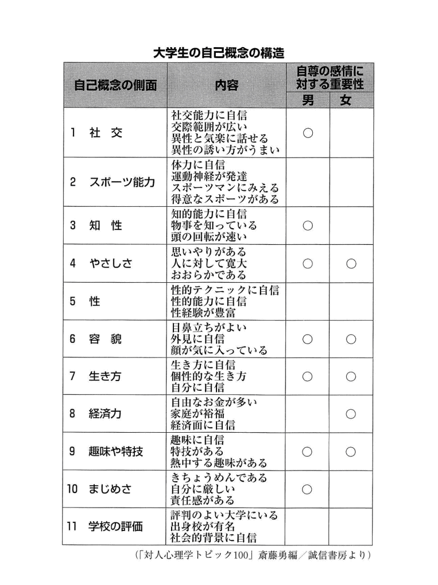

| 「なりたい自分」に変わる本 今日から一気に運命が好転する！ | |
| 富田隆 | |
| SUMIDA出版 (2017) | |
はじめに
「私たちは皆、星の子どもである」
これはＮＡＳＡの天才的な科学者であり、宇宙に関する優れた解説書を残したカール・セーガン博士の言葉です。
炭素や水素、酸素、鉄......、私たちの身体は、数多くの元素によって作られています。ところがこれらの元素は、もともと宇宙にあったものではありません。私たちの太陽が生まれるはるか昔、原初の宇宙空間には水素のような単純な原子しか存在しなかったのです。
やがて、これらのガスが集まって恒星、つまり、太陽のように自らが熱と光を発する星々が生まれます。そして、超高温のまるで核融合炉 のような星の胎内で、ヘリウムやリチウム、ベリリウム、炭素、窒素といったさまざまな種類の原子が生み出されていったのです。
さらに、気の遠くなるような長い時間が流れ、星がその一生を終えたとき、これらの多様な元素が、まるでタンポポの種のように、広大な宇宙空間に散って行きました。それからさらに長い時間が流れ、幾億 もの失われた星々から送られてきた元素が集まって、ようやく私たちの地球が生まれたのです。
その後、あなたが生まれるまでのこれまた長い歴史については、別の専門書に譲 りたいと思います。ただ、確かなことは、私たちの身体を構成している元素には、星たちの一生が刻み込まれているということです。遠い昔、この広大な宇宙のどこかで輝いていた星たちのおかげで、現在の私たちが存在するのです。
私たちは、皆、星の子どもです。
あなたや私を作るために母なる大自然は、これだけの時間と、これだけの手間をかけてきました。
忙しい毎日ではありますが、たまには、そのことに隠された「意味」を考えてもよいのではないでしょうか。
もちろん、神ならぬ人間の浅知恵で、簡単に模範解答にたどりつけるとは思いません。
著者の私にも、いまだによくわかりません。
おそらく、一生、問い続けていくのでしょう。それが「神秘」というものです。
しかも、私たち人間にとって一番身近な自分自身という存在そのものの中に、「神秘」が隠されているのです。
こうした遠大な謎 に思いをはせたとき、「自分はこんなもの」といった思い込みや、「私って○○な人だから」といった決めつけが、いかに軽薄 で無意味なものか、おわかりになるはずです。たしかに、人生のページを一枚一枚めくっていくうちに、新たな可能性が開け、それとともに、謎 が解けていきます。
しかしその奥には、さらに新たな謎 が現れます。
「自分探し」にゴールはありません。それは、とりもなおさず、自分自身が成長し続けるということなのです。
この本は、そんな成長をし続けるあなたに、ささやかなヒントをさしあげるためのものです。素晴らしい明日を切り開くための、あなたの心の旅路に、少しでもお役に立てるよう、お祈り申し上げます。
富田 隆
目次
第１章 「なりたい自分」をイメージする
――まずは、小さな行動から変えてみる
「性格」は行動の見直しで必ず変えられる
まずは「欲求を満たす」ための手段を身につけよう
「こうなりたい」はすべての原動力になる
「好きこそものの上手なれ」の精神でのぞむ
達成感に「ごほうび」をセットして自分を乗せよう
マンネリ化した生活も発想の転換で楽しくなる
過去の栄光「秘密のアルバム」で自分を励ましてみる
もう少し自分を好きになれる努力をしてみては？
第２章 「自分をダイナミックに変える」11 のヒント
――まだ見ぬあなたの「可能性」を引き出すために
１ 「自己観察」をする 無意識の世界からのメッセージ「夢」を分析しよう
２ リラクゼーションする スポーツで体を動かし、深呼吸でリラックスする
３ 「人格のシャドー」を知る あなた自身が〝苦手な領域〟を自覚することが大切
４ バランス感覚を強化する 不得意なことでもやってみるのが幸せへの近道
５ 「異質さ」との接触も大事 恋愛の「あたふた」した体験があなたの視野を広げる
６ 非日常体験から学ぶ 「弱者の自分」を見つけることで見えてくるものがある
７ イメージ・トレーニングをする 「成功する」と信じる習慣がチャンスを運んでくる
８ 「模倣 」から「創造」へ挑む 手本にしたい人のハート部分を真似 てみよう
９ 「身の丈サイズ」の目標を設定する 「お手本」は高くても「目標」は手が届く範囲から
10 自分を肯定する 「好き」なことに没頭すれば自然と力がわいてくる
11 生活スタイルを身につける 「身一つ」で動いてみることからはじめよう
第３章 「間違った性格評価」から解放される生き方
――「私はこういう性格」と思い込んでいないか
血液型や姓名判断はあくまで性格を知る材料とわりきる
「こういう性格」と決めつける前に可能性を見い出そう
思い込みのワナからあなた自身を解放しよう
行動パターンから人の性格は探っていくのが自然
「性格理論」にふりまわされないために
あいまいな自分を愛しなさい
自分の無意識を知るために「星座占い」を使おう
自分は永遠に謎 だからおもしろい
若いうちは「自分をつきつめる」ことも大切
第４章 知らないうちに「私」ができたワケ
――性格は「遺伝」と「環境」に影響される
「ダメな親の子だから」と悲観する前に
性格や才能を早い時期に決定させるのは間違いです
性格は「遺伝」「環境」が相乗してつくられる
人は死ぬまで「グレードアップ」していける
第５章 「本当の自分」はどこにいるのか
――人には「ウラオモテ」があって当然！
「本当の私」のすべてはいいつくせなくて当たり前
「ウラオモテ」の性格がある人のほうがまとも
「さまざまな自分」を生きられるのは幸せなこと
ペルソナが「本当の自分」を変えてしまうことがある
行動パターンを変えるだけでも損な性格は改善する
未来にビジョンをもつと自分が自然に見えてくる
第６章 「地味な性格」なんてどこにもない
――目立つことと個性は違う！
「個性的」とは自分らしさを実感できること
憧れの人は「あなたの個性をつくる」助けをしてくれる
みんなと同じことをやっていても「個性」は生まれる
常識を打ち破ったときに個性が育つ
人は人。まずは「自分だけの特性」を追求しよう
個性を生かすも殺すもあなた次第
第１章 「なりたい自分」をイメージする
――まずは、小さな行動から変えてみる
「性格」は行動の見直しで必ず変えられる
私たちは生活レベルをはじめ、さまざまな事柄に対して上昇思考をもっています。現状よりも上に行きたいと思う心は、生命の維持といったベーシックなところからはじまり、徐々に愛されたい愛したいというような豪華 で、贅 沢 な欲求へと進化していきます。
このような人にそなわった心の傾向を「欲求のヒエラルキー」といいます。簡単にいえば、「ある欲求を満たせば、新たに高度な欲求が生まれ、それを追求する」という考え方です。
性格が変わる。これは同時に、欲求するものの変化をともなう可能性もあります。貧乏していたころは、「お金がほしい」「お金持ちになりたい」という欲求だったのに、裕福になり性格が変わると、「名誉がほしい」「政治的権力者になりたい」と考えるようになります。
欲求が充足すると、より高度なものを求めるという「欲求の階層性」は、性格の変化と密接な関係があるのです。
性格の変化は、パーソナリティーが発達するうえでの経験に左右されるという一面もあります。私たちは、何かを経験することで、一つひとつ新しい行動パターンを身につけていきます。こうした過程を説明するのが「学習理論」です。
この場合の「学習」は、「勉強」を指すのではなく、過去の経験をもとにして新しい適応の仕方を身につける、という意味です。
学習を意識していることもあれば、無意識の場合もあり、人の性格は数知れないさまざまな行動によって学習したことが、ベースになっています。
ひとりの人間の性格を変えようとしたら、その行動の一つひとつが、どのように動機づけされて、獲得されていったかを理解することが必要です。
性格というのはとても抽象的ですから、具体的な行動とそれによって学習したことから考えるほうが理にかなっています。ベーシックな面を把握 することで、性格を変えたり成長することがスムーズになるはずです。
■「なりたい自分」をより具体的にイメージする
「性格を変えたい」と思ったことは、誰でも一度くらいはあるでしょう。どこをどう変えたいと思ったのか、頭の中でイメージしてください。きっと暗い性格、優柔不断なところ......など、漠然 としたイヤなイメージが浮かぶはずです。
性格を変えて明るくなりたい。決断力をつけたい。このようなポジティブな願望が強ければ強いほど、ネガティブなイヤなところも強くイメージされると思います。自分のイヤなところを長年にわたって変えたいと思いながらも、変えられないでいるのが現実です。
それは、性格を変えるための手段である「行動」を変えないからです。漠然としたイメージだけでは、性格は変わりません。目標や動機が変わらなければ、性格は変わりません。
つまり、よくない行動パターンを、いい行動パターンに取りかえる具体的な努力がなければ、性格は変わらないのです。
よく忘れ物をするおっちょこちょいな人がいます。その人が、落ち着いた几帳面 な性格になりたいと思ったとします。「落ち着いて」と自分に語りかけて生活を送ります。けれども長続きしない。いつのまにかまた、もとのおっちょこちょいな人に戻っています。
「落ち着いて」とイメージするのはけっして悪くはないのですが、これではあまりにも抽象的です。
もっと具体的な行動から、一つひとつ変える必要があります。「メモをこまめにとる」「正確にメモをとる」「出かける前に頭の中を整理する」というような習慣をつけ、「いい行動パターン」を身につける具体的な努力をしなければなりません。
一つひとつの行動を変えることが、あなたの性格の変化に、必ずいい方向でつながっていくのです。
まずは「欲求を満たす」ための手段を身につけよう
性格を変えたいと思うのは、自分にイヤなところがあるということです。飽きっぽいとか、短気であるなどの欠点は、日ごろの生活に支障をきたします。だから性格を直したい......。
ヒステリックなまでに短気な人は、よくトラブルを起こします。周囲の人にちょっと迷惑をかけているというぐらいの段階なら、性格が性格なだけに、「性格を変えたい」とは思わないかもしれませんが、何かの大きなトラブルを起こしてしまうと深く反省して、「私の性格をなんとかしなきゃ......」と考えます。
しかし、このような人は、ちょっと時間が経てば、またつまらないことで同じようにヒステリーを起こすものです。あなたの周りにも、このタイプの人は何人かはいるでしょう？
ヒステリー性格の人がヒステリーを繰り返すのは、彼らは基本的に「短絡的 で子供」だからです。デパートで子供がオモチャを買ってもらえなくて、泣いたりわめいたりする姿と同じです。
ほしいものを手に入れる。したいことをする。そのための努力や手続きを省略してしまっているわけです。
物欲を自分で満たすための方法や手段を知らないから、途中でそのプロセスを省いてしまう。つまり、目の前にある問題を自分で解決することができないから、ヒステリーを起こすのです。
欲求が満たされない。それは自分にとって困難な状況です。その困難を取り除くために怒鳴 ったり暴力を振るう。短絡的な手段をとって、ショートカットしてしまうわけです。
■困難からの「短絡的逃避 」は人生にはプラスにならない
試験になると風邪をひいたり、お腹が痛くなったり、急に手が震 えて字が書けなくなったり......。
最近は、このような若い人が増える傾向にあるようです。これは、目の前の「試験」という困難から逃れたいという気持ちに起因しています。それがわかっていても、自分ではどうしようもないのです。
精神的なものが体に現れるのは、神経系の異常や免疫力の低下などが原因ですが、それよりも、困難を前にするといつも「弱る」のでは、長い人生を考えると、ちょっとつらいでしょう。
これは短絡的 な逃避 という意味ではヒステリーと同じです。けっして人生のプラスにはなりません。
夫婦関係でも同じです。夫が仕事で忙しくて、あまり相手にしてくれないと、若い奥さんがいきなりナイフを持ち出して「私と仕事と、どっちが大切なの！」と迫る。
まあ、そこまではいかないまでも、テーブルの上の物を投げたり、家を飛び出したりということは少なくありません。
明らかなヒステリー反応です。夫を振り向かせる努力をする余裕もありません。「芸がない」といえばいいのでしょうか。
芸がないから、突如、果物ナイフを握ったり、夜の街に飛び出したり......の、ドラマチックなことをやってのけるわけです。
夫は驚いたり困り果てたりして、その場は取り繕 って、謝ったり、機嫌をとったりして収めます。けれども、長い目で見た場合にこんな状況は、その夫婦にとっていい状態とはいえないでしょう。
結局、具体的な問題解決能力や何かを獲得するための能力がその人にないから、幼稚な手段や手っ取り早い方法、あるいは短絡的な手段に頼らざるを得なくなってしまうのです。
性格を語るうえで、ここは大切なところです。
欲求を満たすための手段なり、方法を身につけるという具体的な行動が、性格の変化をもたらすことを忘れないでください。
「こうなりたい」はすべての原動力になる
自分の性格を見つめると、欲求を満たすための能力が不足していることに気づきます。どんな人格者でも、必ず気がつく欠点のようなものがあるはずです。
そして、「自分の欲の深さ」を痛感します。そうはいっても、欲が深いことが悪いと考える必要はありません。お金持ちになりたい、有名になりたい、人から尊敬されたい、みんなから愛されたい......。このような欲望は誰もが必ずもっています。それが人間です。
人を傷つけたいというような欲望は困りますが、目立ちたいとか有名人になりたいというような欲望は、誰にでもある自己顕示欲 の表れですから、欲深く醜 い願望と考えることはないと思います。
自己顕示欲は、自然に湧 き出してくるようなものです。それを醜いとかおぞましいといったところで、なんの解決策にもなりません。自分の中の自己顕示欲をどうやって満たしていくかを考えるべきです。
■人に迷惑にならなければ、欲望は悪いことではない
まず欲望をかなえる手段を人に迷惑にならないように探し出すことが大切です。手法がわかれば、短絡的で暴力的な手段に訴えなくとも解決します。
ところが、自己顕示欲を満たすための筋道もわからず、欲求を充足させるための能力もなくて、周りに迷惑をかけるやり方で行動を起こしてしまうというのは問題です。欲望自体は悪くなくても、結果として「イヤな性格」特有の行動をしてしまうのです。
ほとんどの人は、おそらく自分の性格における欠点を多少は気づいているはずです。性格を変えたいと思う人ならば、なおさら欠点を意識して生活しています。ここまでわかっていながら、性格を変えられないのは、この「欲求の充足法」をもたないことに原因があるのです。
性格を変える――ここには、欲望を悪とするのではなく、自分の求めるものを積極的に手に入れる人間になっていくというテーマがあるようです。そうした努力を怠 っては、性格の改革は望めそうもありません。
どうすれば、一つひとつの欲望が満たされていくのか。それを冷静に考えることが、遠いように見えても、性格を変える近道なのです。
『好きこそものの上手なれ』の精神でのぞむ
いままでしてきた行動パターンを急に変えることは大変です。大きな目標とか、きっかけが必要であることは間違いありません。では、あなたはいかにして自分を「その気」にさせますか。
いままでできなかったことを可能にするという行為には、それなりの努力と忍耐が必要です。辛いこともあれば、疲れることもあります。だから、ついつい怠けてしまう。これでは、性格はいつまでも変わりません。
疲れたりイヤになる心をなんとかして跳ねのけた人だけが、新しい能力を身につけていきます。それを説明するのが、「学習理論」です。
ネズミを使った「学習理論」の実験を紹介します。
ネズミを狭い箱の中に入れて、壁の一部にレバーをつけておきます。このレバーを押せば、餌 が出てくるようになっているのですが、ネズミはそんなことはわからないから、狭い箱から出るための出口を探して動き回ります。
動き回っているうちに、ネズミはたまたまレバーにさわってしまう。そのとき、機械仕掛けで餌 がコロンと出てくる。私たち人間だったら、「レバーを押せば餌 が出る」ことをとっさに認識するでしょうが、ネズミはそれほど賢くない。けれども、行動は時間とともに確実に変化していきます。
徐々に短いペースでレバーに触れるようになります。最初の一時間で初めてレバーに触れて、次はその三〇分後、その次は一五分後......というように、レバーに触れる間隔は短くなっていきます。
レバーを押せば、そのたびに餌 が出てくるのですから、ネズミは次第に自分の消化能力、空腹時間に合わせてレバーをカタンカタンと押すようになります。
ネズミのような動物でも、自発的に働きかけることによって手応えのある結果を導き出します。「レバーを押す」という行動を学習したことになります。
■「ネガティブな条件付き」の行動は身につかない
これは人間も同じです。学習して、なんらかの快感や手応えがあれば、新しい行動を会得することになります。たとえば勉強です。人よりテストの点がよかったり、先生にほめられたりすると、「やる気」が出るようになります。得意科目というのは、幼いときのこのような体験をしたケースが多いものです。
反対にいい結果が出なければ、逆効果になってしまいます。いきなり難度の高い問題に挑戦して挫折 したり、失敗して強く叱 られたりすれば、その科目が嫌いになってしまいます。
心当たりはありませんか？
この場合は、「蔭 日向 のある行動」として表れることもあります。たとえば読書です。最近は子供や若者の活字離れが問題になっていますが、読書というのは本の楽しさを知ってしまえば、ほおっておいても読むものです。これは、本がおもしろいから読むという自発的な行為といえます。
ところが、学生時代には本を読んでいた人でも、卒業して社会に出たとたんに本を読まなくなる人がいます。社会人は忙しいという理由もなくはないでしょうが、基本的な理由は別のところにあります。
彼らがおこなっていた学生時代の読書は、イヤなものを避ける行為だったのです。「負の強化」というのですが、災難を避けるための行動として読書をしていたわけです。
ネズミのレバー押しの実験は、餌 が手に入るという能動的な行動でした。これを逆にして実験すると、ネズミが違う意味で学習することがわかります。
餌 が出るときと同じように、箱の中にはレバーがあります。ただし、餌 が出るのではなく、電気ショックが止まるようにしておきます。電気ショックは、ブザーが鳴ってから一〇秒後に床に流れるようにセットしてあるのです。
ブザーが鳴ってから、この時間内にレバーに触れれば電気ショックはきません。また、電気ショックがきてもレバーに触れると、そこで切れるのです。
ネズミは電気ショックがくると、バタバタと走り回ります。走り回っているうちに偶然、レバーに触れます。そうすると電気ショックのスイッチが切れて止まります。
その後、またブザーが鳴り、電気ショックがくるわけですが、その場合は、前回よりも早くレバーに触れるようになります。それを繰り返すことで、レバーに触れて電気ショックを切るまでの時間が短縮されていくのです。
最後にはブザーが鳴っただけで、レバーに触れるというようになります。
餌 が出てくるのも、電気ショックが止まるのも、結果は「いいこと」です。けれども、大きな違いがあります。
いまの教育は、後者です。つまり「罰 の脅 し」がちらついている中で、生徒や学生は勉強している状態です。偏差値、内申書、赤点、単位......などをふりかざす教育者サイドに対して、子供たちは脅威 を感じています。そんな環境にほおり込まれているから、子供たちは自分の将来に対しても不安なのです。
読書も、これと同じです。夏休みの読書感想文を書くためであったり、ゼミの発表や卒論のためであったり、就職試験のための本を読んでいる。こんなことが小学生のころから癖 になっていると、本を読み勉強もよくするのですが、要は「落ちこぼれるかもしれない」「不良ばかりいる学校にいくことになるかもしれない」というような恐怖から逃れるために、一所懸命 に読書をするようになります。
ですから、社会に出て「恐怖から逃れる」必要がなくなると、読書をしなくなります。
■同じ努力をするなら「ごほうび」があるほうがいい
このようなネガティブな条件づけに支えられた行動というのは、意外に役に立ちません。何かの目標に向かって努力すれば、大きな「ごほうび」を与えられる状態を積極的につくることが理想です。勉強にしても能率が上がりますし、努力する気力が湧 いてくるのです。
「ごばうび」のある仕掛けという面で、いちばんうまくやっているのは、ギャンブルやテレビゲームなどです。
なぜか人はパチンコや競馬に夢中になります。成果によって、手応えを感じることができるからです。毎日パチンコ店に通って努力しても、いつも報われるわけではありません。手応えが得られないときもあります。いつ「ごほうび」がもらえるかどうかわからない状態が、人を夢中にさせるのです。
夢中になる理由は、基本的に「いいことが起きる」という結果です。ギャンブルは、みんなそうです。競馬も、万馬券を当てる確率は低いけれども、誰もがいつか当たることを期待して馬券を買います。
テレビゲームにしても、「何面までクリアした」「新しいアイテムを手に入れた」「裏ワザを見つけた」というような自慢できる名誉欲 や達成感が感じられる「いいこと」が起きます。
自分のテクニックや戦略が向上していくことが、点数やステージの進み具合で示される。それがうれしいのです。これを「行動が強化される」といいます。ギャンブルやゲームは強化力がとても強いのです。
よく「好きこそものの上手なれ」といいます。これは、好きなことは自分に「ごほうび」をたくさんあげられるし、しかも手応えを感じられるからとても上達が速いということです。
嫌いなことをしなければならない。これは電気ショックの実験と同じで、「ごほうび」がありませんから、なかなか上達しないのです。
同じ努力をするなら、意識的に「ごほうび」のある努力をしたほうがいいに決まっています。「ごほうび」の中身は、人それぞれですが、自分を「その気」にさせていくことで性格もまたポジティブな方向に変わっていくのです。
達成感に「ごほうび」をセットして自分を乗せよう
日常生活での「仕事」や「勉強」のことを考えると、私たちの生活は、自分にとって、いかに「いいこと」が起きるしかけになっていない かがわかると思います。知らず知らずのうちに、いつも何かに追われて行動しているようなものです。
だからといって嘆 いてばかりいても、ことは解決しません。こういう状況だからこそ、ポジティブな考え方が大切です。「条件づけ」によって、自分を「乗せ」ていき、「やる気」を出していくことで、新しい能力を身につけていくべきでしょう。
そのためには、他人が「ごほうび」をくれないのであれば、自分が自分に「ごほうび」を与えるという方法があります。たとえば、自分をほめる。努力して一つの仕事をやりとげた。あるいは新しいものを一つ覚えたとしたら、「よく頑張った」と、自分をほめてみます。
心の中でほめるだけでは気がすまなければ、「ごほうび」を与えてもいいでしょう。「ここまで勉強したらケーキを食べてもいい」「ここまで仕事を終わらせたらお酒を飲んでもいい」というように、自分への「ごほうび」を考えます。
仕事であれ、趣味であれ、学業であれ、いま自分がやらなければならないこと、やったほうがいいとわかっていることについて、自分への「ごほうび」を考えて行動するということです。
「ほうびなんて不純だ」と思うなら、それでもいいでしょう。自分の残した成果を見ることで満足し、喜びを得るのであれば、確かな手応えになります。
「愛ちゃん」こと卓球の福原愛さんは、試合でスマッシュが決まったあとに、叫び声をあげることで有名です。これは「よく点数を入れた！」と自分で自分をほめているのです。
こうやって愛ちゃんは自分を盛り上げて活力を生み出しているのです。
スポーツ選手の中には、ちょっと横柄な感じがするぐらい自信たっぷりのところを見せる人がいますが、それは自分自身をほめることで、「やる気」のある心が表面化している場合も少なくありません。一流選手は、自分を「乗せる」のがうまいものです。
■「累積 記録方式」はあなたの積極性を育てるのによい
子供のころ、ラジオ体操に行くと、シールを貼ってくれたり、スタンプを押してくれたでしょう。その出欠表を見ると、眠い目をこすりながらも自分は頑張ったという実感が湧 いたはずです。このように自分で乗り越えたものを確認できるようにすれば、根気や忍耐力が備わります。
セールスマンの営業成績表も、営業結果がわかるようになっていて効果はありますが、棒グラフでは売り上げが落ち込んだときは悲劇ですから、ラジオ体操の出欠表のような「累積 記録方式」のほうが好ましいでしょう。
累積記録方式ならば、落ち込んでも横ばいですし、ちょっと頑張ればポイントは増えていきます。テレビゲームで獲得点が増えているようなもので、自分の力が上がったことが明確になり、次につながるのです。
シールやスタンプを使って、ビジュアルな形にしていつでも見られるようにするのも、いいアイデアです。そうすれば、いつの間にか積極的な気持ちが育ち、どんなことに対してもポジティブな思考と行動ができるようになるはずです。
「なんだ、そんなことか」――と思われるかもしれませんが、こういうことは意外に、誰もやっていません。自分をほめることは、なかなかしないものです。
語弊 があるかもしれませんが、社会主義経済が失敗したのは、このあたりの事情が大きいのではないでしょうか。資本主義経済であれば、懸命 に働けば、大型液晶テレビも高級車も買えます。つまり、努力すれば「ごほうび」をもらえる社会です。
ほしいものを手に入れようと思えば、頑張って働くのが人間です。そして、努力をすれば、それなりの能力もついて、手応えや充実感も味わえます。経済的にも精神的にも、いい方向に進みます。
ちゃんと「ごほうび」があるから、予定より仕事が増えても頑張れる。そして、その過程で新しいことを覚え、何かを発見していくことで、行動は強化されていくのです。そうして国民のパワーが経済を盛り上げていきます。
反対に自由競争のない計画経済のもとで、「今日は、これだけはつくりなさい。失敗はしないように」というような環境で働かなければならないとしたらどうでしょうか。必要以上に頑張っても、まったく「ごほうび」はないのです。何のために頑張ったのか......。これではポジティブな発想は、生まれそうにありません。
しかも一方で、失敗すると重い罪が待っているとなれば、なおさらです。創意工夫とか、集中力のあるところから生まれる奇抜なアイデアなどは望むほうが無理になってきます。
自分の「やる気」をひき出す知恵は、社会までも動かすような大きな力を秘めているのです。
マンネリ化した生活も発想の転換で楽しくなる
最近の女性は、必要以上に体重やスタイルのよしあしが気になるのか、ダイエットをする人が大勢います。効果が上がらずに、途中で挫折 する人も多いようですが、効果があって体重が減った人は、すっかりダイエットにのめり込んでしまいます。
体重の変化を折れ線グラフにすれば、右下がりの線になります。彼女達にとっては、それが楽しくてたまらないといいます。いまの世の中、手応えがなかなか感じられません。ですから、数字で明確な成果を表してくれるダイエットに、はまってしまうのでしょう。
やせたらイコールきれいになる、というわけではないでしょう。健康によくないこともあります。こうなると、ダイエットに夢中になるのは考えものともいえますが、彼女たちは自分の努力の成果が見えるものに意識が集中してしまうのです。
お金を貯めるのも同じです。貯金通帳に少しずつでもお金が貯まっていくのを見ると、うれしくて、つい日常の生活を犠牲 にしてまで貯金してしまいます。そして、夜中に、ひとりで通帳を見ては、ほくほくしていたりします。それが唯一の楽しみ......という悲しい人もいるようです。限度を越えると、ちょっと問題ですね。
■他人はあてにしないこと。自分で気分を切り替えましょう
ダイエットにしても貯金にしても、必要以上にのめり込んでしまうのは、日ごろの生活に希望を見出せないからという一面もあります。
勉強にしても仕事にしても、毎日が同じことの繰り返しのように感じられるときがあります。しかも、自分のしたいことがいつもできるわけではありません。そこに生きがいや、やりがいを見い出せずにいることが原因で、幸せをつかむにはほど遠い行動に走ってしまうのです。
こんなときには、マンネリ化した生活に耐 えて過ごすよりは、むしろ、それを楽しみに変えるほうがポジティブな選択で、好ましいのです。
たとえば、ＪＲ駅の「みどりの窓口」で働く人が、毎日同じような窓口業務にマンネリを感じて、すっかりイヤになっているとします。次々と押し寄せてくる仕事に「早く仕事が終わる時間にならないかなあ」と、ため息をつきながら、「決まりごと」の仕事をこなしている状態です。
こういう場合は、自分が一日に何人のお客と接し、どれだけの仕事を処理したかを教値にしてみればいいのです。累積していけば、今年は何万件の仕事を片づけたという成果を自分で確認することができます。
こうすれば向上心が芽生え、より確実に早く仕事が進むように、工夫したり努力したりするようになります。工夫して、何か新しいことを考え出せば、それは喜びに変わり、ますます仕事が楽しくなるという好循環になります。
会社組織にかかわらず、いまの社会は組織が大きくなりすぎて、誰もが細分化した仕事を割り当てられるシステムになっています。自分はいま、いったい何をやっているのか――ふと立ち止まるとわからないくらいです。
「あなたはこれこれこういう理由で、このような立場ですよ。だから、いまはこういう考え方で頑張りなさい」
なんてことは、残念ながら社会も会社もいってはくれません。
自分で気持ちを切り替えて、何か「ごほうび」をあげるようにしていく努力が必要なのです。
過去の栄光「秘密のアルバム」で自分を励ましてみる
企業ではパソコンソフト「パワーポイント」が、新企画のプレゼンテーションをはじめ、自社宣伝のための資料作りなど、さまざまな用途で使われています。このように、コンピューターファイルを企業が使用するのは、常識になってきました。そしてデータをクラウドに預けることもできるので、いまでは身軽なかっこうで外出するビジネスマンがほとんどです。しかしこれは、ここ一〇年の新しい動きです。
それまでは、仕事ができるビジネスマンは、いつも大きなカバンを掲げてお客さまのもとへ出かけたものです。
ずいぶんと前になりますが、アメリカの父子家庭の姿を描いた映画『クレイマー、クレイマー』にも、ダスティン・ホフマンが、いくつもの企業へ就職活動に行くシーンがありました。彼はそのときにファイルを持ち歩いていました。役どころが広告マンということもあるでしょうが、ファイルには、彼がそれまでに手がけた仕事がいっぱい収められていました。実績を見せる。それは自己ＰＲの国であるアメリカ社会では今でも重要なことです。データを持ち歩くビジネスマンが増えたとはいえ、いまだ日本のサラリーマンの中には、自分の仕事の記録を紙に出力してファイルしている人もいます。今後もこのままでいいかどうかは別問題としても、このようにファイルすることは自分を励ますことになるという点で重要です。
実は私たちは昔から、自分が努力して得た成果を形に残すという作業をしています。猟師は獲物の毛皮や角の部分を飾ったり剥 製 にしていますし、釣り好きの人たちは魚拓 を取って壁に貼ったりしています。
コレクションは考え方を前向きにして、積極性を発揮させる原動力になります。
■気力の充実で、行動パターンは前向きになる
誰にでも、過去に成功したという楽しい思い出の一つや二つはあるはずです。人からほめられた、賞をもらった......このような自分の成果を洗い直すことも必要でしょう。落ち込んだときほど、それらの戦利品が心を勇気づけてくれるはずです。
小学生のとき、「絵のコンクールで金賞を取った」「運動会でリレーの選手をして優勝した」「生徒会の役員に選ばれた」など、過去の栄光をずらずら並べてみてはいかがでしょうか。
これが「秘密のアルバム」です。落ち込んだときや気力が失せたときに「秘密のアルバム」を開いてみれば、「自分もまんざらじゃない」と思えるはずです。また、何かやろうという気持ちになります。
ダイエットのためのダイエットや、貯金のための貯金というのは賛成できかねるところもありますが、自分が何かを達成したということなら「秘密のアルバム」に収納できる戦果として評価できると思います。
気力が充実すれば、行動パターンは前向きに変えられます。気力を奮い立たせる意味でも、失いかけた自信を取り戻す意味でも、「秘密のアルバム」は、あなたの人生の強い味方になってくれるでしょう。
もう少し自分を好きになれる努力をしてみては？
「私は平凡な人生でいい」
こんなことをいう人がいます。最近は以前と比べれば減っているでしょうが、まだまだ大勢いることは確かです。
では、この人たちは本当に「平凡な人生」を望んでいるのでしょうか？
どうも、そういうわけではないようです。心の底には自己顕示欲があって、「目立ちたい」「いまよりも裕福な生活を送りたい」と叫んでいることでしょう。
それでも「平凡でいい」というのは、目標を達成できなかったときの無力感や敗北感を味わうことを避けているからです。
小さな目標であっても、達成できなければ辛く悲しいものです。そこで最初から、
「自分は何も望んでいないから、これでいいんだ」
というように自分にいい聞かせているわけです。
誰でも、努力して報われなかった経験が何回かあるはずです。それが運悪く重なると、「自分は努力しても報われない」と思い込んでしまいがちです。ですから、多くを望まずに生きよう、と自分をコントロールしているのです。「敗北の先取り」をすることで、心の動揺を制御しているのです。
このような人に限って、夢や理想を追いかけようと懸命 になっている若者に、
「世の中、そんな甘いもんじゃないわよ」
というようなことをいってしまうのです。これは親切なようでいて、実は何のアドバイスにもなっていません。単に「敗北の先取り」を人に押しつけているだけの話です。
■人生は「守り」に入ったほうが不思議と心配ごとが増える
「平凡な人生でいい」という理由のもう一つは、現状をなんとかキープしたいという気持ちが強いのです。これ以上努力することなく、いまの状態が保たれるなら、それで幸せ......ということなのでしょう。
けれども、「平凡でいい」「いまの生活で満足、私には欲がないのよ」といったところで、何もしなかったら現状のままつづくとは限りません。現在の日本経済をみれば実感としてわかると思いますが、いまより悪くなる可能性も十分にあるのです。
過去にもっと悲惨な経験をしていれば、
「これ以上は贅 沢 をいいませんから、このままでいいです」
と思うのは無理もないことかもしれません。もちろん、そう思っている人でも、まったく望みがないわけでもなく、日常生活の中では次々と悩みが出てくるはずですが。
性格のことでグチをいう人は、「あなたはいいわね、悩みがなくて」「平凡な生活がいちばん幸せなのかなあ」などとよくいいますが、それは、平凡な人に悩みがないように見えるからであって、平凡な人の心がわかっていないのです。平凡な人にも、それなりの悩みはあるはずです。
「平凡でいい」と思っている人でも、こんなことをいわれればムッとします。
そもそも人生は、「守り」に入ったほうが心配ごとや悩みが増えるものなのです。
「攻撃は最大の防御なり」
といいます。何かに向かって戦いを挑んでいる人に比べ、「守り」に入った人の心情は苦しいのです。
自分はその場所にとどまっていたくても、時間は確実に流れていますから、結局、水面下では懸命 に足をバタつかせていなければなりません。アヒルやカモのように、一見ゆったりと水面に浮かんでいるような平凡な生活をしていても、足の動きを止めるようなことはできないのです。バタ足をやめたら、流されるだけです。何の努力もしないで現状をキープすることなどできないのです。
結局、「何も望まず、平凡な生活でいい」というのは、望みがないのではなく、何をすればいいのか、どうしたらいいのかがわからないということなのです。そして、「報われるかどうかわからないことに努力するのは、もうイヤ！」
という心理の裏返しなのです。
ですから、「欲がなくて、とてもいい人」というのは、基本的にはいません。欲がないのではなく、自分に対して正直ではない人、あるいは単なる怠け者、あるいは生きることに疲れている人ということです。
そういうときは、自分で自分を励ますことです。少なからず、自分に変化が訪れるはずです。恋をすれば、相手に好かれるための努力は惜しまないはずです。
自分が自分に好かれるようになる努力も、性格を変えるための効果的な手だてです。
第２章 「自分をダイナミックに変える」11 のヒント
――まだ見ぬあなたの「可能性」を引き出すために
１ 「自己観察」をする
無意識の世界からのメッセージ「夢」を分析しよう
性格とは、あいまいなもので多面性をもっています。自分の性格を決めつけないことが大切なのです。
では、どうすれば自分の性格を変えられるのか。まず、自分をじっくりと見つめ直すことからはじめるべきではないでしょうか。
第１章で「秘密のアルバム」の話をしましたが、自分の戦果を見ることは、自分がどういう人間なのかを分析する手がかりにもなります。
さらに踏み込んで考えたいときには、「秘密のアルバム」ではなく、日記をつけてみることです。自分が考えたこと、行動したことなど、自分の経験を後でひもとけるようにするのです。自分の足跡が「形」として残っていれば、自分を観察することが容易になります。
人は、顕在意識 のほかに潜在意識 、つまり、自分が意識していることの陰に無意識の世界をもっています。
私たちは顕在意識にばかり目を奪われがちですが、無意識といわれる領分も自分にあることを認識する必要があります。それが、自分の内面を見るということになります。
ヨガの行者が瞑想 にふけったり、禅宗のお坊さんが座禅を組んだりするのは、無意識の世界に入っていくためにやっているのです。本当に自分を知るには、そういう世界に踏み込んでいく必要があるのです。
■自分の内面を知ることが変化への第一歩になる
「自分を観察する行為」といっても、大きく分けて二つあります。一つは表面の自分、つまり自分がおこなってきたパフォーマンスを見ること。もう一つは未知な部分である無意識の世界まで潜 って見ることです。
自己を観察するには、後者のように無意識の世界まで達しなければならない。ですから、一日にほんの少しでも瞑想 の時間をもつことは、本当の自分を知るためには重要な行為といえます。
「私はどういうことに価値をおいているのか」
「自分はこういうふうに生きていこう」
と、生き方の根源にかかわる部分を見いだそうとするには、瞑想 をしたり、夢を分析することも重要です。
夢は、無意識の世界がつくり出したものです。いわば、無意識からのメッセージです。自分の中に秘められた「何か」を知る手がかりとしては、貴重な材料です。
夢には無意識の中に隠された願望が現れますし、日ごろコンプレックスになっているものも現れます。
それを、一つひとつ見つめる。フロイトやユングといった心理学者たちの手法を用いる必要はありません。自分なりの考え方、分析法でいいのです。それだけでも、自分の内面を見つめるには十分な効果があります。
「自分の内面にあるものを知らずして、自分を変化させることはできない」
このように考えてください。
そもそも、いまの自分をしっかり把握 していなければ、いつどのように変わったかもわかるはずがないのですから。
２ リラクゼーションする
スポーツで体を動かし、深呼吸でリラックスする
現在の忙しい社会では、自分の内面に目を向けるどころか、普段の自分すら見失ってしまうことが少なくありません。製品をオートメーションで作りはじめたころからでしょうか、何事においても合理主義、生産性中心の社会が、いつのまにかできあがってしまいました。
これは結果として、人に強いストレスをもたらしています。誰もが時間に追われ、得体のしれない何かに追われているように見えます。このような生活者である自分をストレスから解放させてやることも大切です。
そこでリラクゼーションの方法を身につけてみては？ これには大きく分けて二種類の方法があります。自分に合った方法は、自分にしかわからないことではありますが、ぜひ、参考にしてください。
■リラクゼーションには性格を変える力がある
一つめは、スポーツで体を動かすことです。体を動かし、汗を流します。これは、心も体もリラックスさせることに大きな効果があります。
フラストレーションがたまると、人は攻撃的になります。いらいらするからといって、まわりの人に当たりちらせば、一般社会では生きていけません。ですから、普段の生活では攻撃的な自分を自分で抑え込んでしまいます。これがストレスとして蓄積されるのです。
スポーツは、タイムや距離を競う競技にしても、相手と闘う競技にしても、攻撃的な精神力が必要です。スポーツをすることによって、攻撃的な面での欲求不満は解消できます。しかも、身体的な疲労が心を落ち着かせるという作用もありますから、一石二鳥といえます。
これは、以前に一部の中学校や高校でおこなわれた「非行少年を体育系のクラブに入れ、精神的な面までも教育しようとした」ことを思い出せばわかるでしょう。教育者側の論理で強制するというのではちょっと芸がないと思いますが、その効果は認めざるを得ません。自分の意思でおこなえば、効果はもっと高くなるはずです。
リラクゼーションのもう一つの方法は、文字どおり、体をリラックスさせることです。たとえば、温泉に入る。とはいっても、温泉観光地にでも住んでいない限り、日常的な方法とはいえません。風呂にゆったりつかったり、湯船の広い銭湯に行くなどの方法を考えてください。いずれにしても、思いたったらすぐにでき、習慣になりやすい方法がいいのです。
畳の上に横になって、体を緊張させたり弛緩 させたりするのも効果があります。同時に、深呼吸するのもいい。とくに女性は、大の字になるような体の解放をする機会が少ないですから、ひとりのときに思いきり、リラックスすることです。
これはいわゆる自律訓練法といわれる方法の一つです。また気功にも、内気功という深呼吸で心身の解放を目的としたものがありますから、試してみるのもいいかもしれません。
スポーツで体を動かし、呼吸法などで完全にリラックスすることです。単なる健康法としてではなく、これが性格を変えるためには大切です。日常生活において、ベーシックな部分で支えになってくれます。
３ 「人格のシャドー」を知る
あなた自身が〝苦手な領域〟を自覚することが大切
「自分を知る」という点から考えると、ユングのいうところの「人格のシャドー」が大きな手掛かりになります。
シャドーとは、影のことです。自分とはかけ離れたまったく違う部分のことです。このシャドーは夢に現れます。先に述べたように、自分を知るうえで夢の分析は役立つのです。
さて、実は、シャドーは昼間でも知らず知らずのうちに顔を出しています。
あなたはテレビを見ていて、人気はあるのに、なぜか自分は好きになれないというタレントが一人や二人いませんか。
このようなケースでは、そのタレントに自分のシャドーを重ね合わせている可能性があります。どうして気に入らないのか、じっくり考えることが大事です。
まず、そのタレントが気に入らない理由を書き連ねてください。「横柄 だ」「態度が大きい」「わがままそう」「自分勝手」......と、思ったことをそのまま書きます。次にそれを肯定的な言葉に置き換えるのです。
・横柄↓ どんな場面でも臆 することがない
・態度が大きい↓ 自己表現に積極的
と、いう具合にです。
■「人格のシャドー」から自分の弱みはわかる
置き換えられた言葉が、自分の足りないところです。つまり、シャドーというのは、自分の中の未開発部分ということなのです。
そのタレントが「横柄だから嫌い」なのであれば、自分は「普段は礼儀正しいけれども、相手が大物だったら臆病 になってしまうところがある」からなのです。いかがですか。思いあたりませんか。
自分の無意識の中にあるものが、このようにシャドーという形で反映されるのです。もちろん、自分のシャドーを知るだけでは何にもなりません。自分の臆病なこの面を少しずつ取り除いていく作業が必要です。
そのためには上司に自分の考えをいう、好きな人をデートに誘うなど、身近なところから少しずつ改めていけばいいと思います。いきなりすべてを変えようとするのはケガのもとです。
小さなことをコツコツと積み重ね、焦らないことが大切です。性格を三カ月以内に変えようと、自分にプレッシャーをかけすぎては長続きしませんし、ストレスを抱える可能性も高くなります。あなたが大きく飛躍するには、それなりの助走が必要なことを忘れないでください。
４ バランス感覚を強化する
不得意なことでもやってみるのが幸せへの近道
スポーツの世界では、選手の欠点を鍛え直すよりも長所を伸ばそうとする指導者が評価される傾向があります。野球なら昔は、バッティングがうまくても守備が下手な選手は守備練習ばかりさせられていましたから、ずいぶんと考え方が変わったものです。
しかし、ユングは、長所を伸ばすだけでは「細い塔」をつくっているだけ......といっています。
底辺が安定していないから非常にもろくて、倒れやすいのです。人は、ピラミッドのような裾野 を広くして、がっしりと築いたほうが安定するということです。
スポーツ選手の場合は、長所を伸ばすといってもバッティングだけ練習させるというような方法は取りません。欠点の守備練習もきちんとやります。総合的な練習に加えて、さらに長所を伸ばそうとします。
スポーツの場合は、このように指導者がいることで選手の実力は向上していきます。けれども、人生においては、このような指導者はなかなか見つけられません。ですから、ついつい「細い塔」を建てようとするのです。
特に若いときは、自分を他より目立たせるために、特定の能力だけを磨く傾向があります。それは「若さゆえ」という部分もあるのでしょうが、将来を考えると危険です。安定感がありません。好きな領域や得意な分野だけでなく、興味のない領域や不得意な分野にも挑戦することが幸せへの近道といえそうです。
■バランス感覚が大切。まずは視野を広げよう
物事にはバランスが大切です。視野を広くしておくからこそ、自分の長所や好きなことが十分に発揮できるのです。
履歴書に代表されるように、日本では、「自分の長所」「自分の短所」などを書かされることは何度もあります。そのたびに、ただ欄を埋めるためだけに記入しているような気持ちになりがちです。けれども、きちんとシャドーをチェックして、嫌いな領域や不得意な分野についても、それなりの準備をしておくことが大切です。
いままで生きてきたなかで、怠けたり気がつかなかったりして過去に置き忘れてきたものを見つけて少しでも掬 うこと。自分の長所をさらに伸ばしていくためには、トータルな能力が必要なのです。
バランスがとれれば精神的にも安定します。そうすると、長所も十分に発揮できます。
シャドーをチェックするのは、積極的な個人のあり方の問題をとらえることができるからです。一方、バランス感覚は、自分と社会との関係において効力を発揮することになります。
世の中には、これは男性的な仕事、これは女性的な仕事という決まりごとがあります。決まりごとといっても、誰も決めたわけではないのです。社会がなんとなく、そんなふうにしてしまっているというべきです。
男性はメカに強い、女性は優しくて植物や動物の世話が好きというようなステレオタイプの「決まりごと」があります。男と女が役割をやり分けているわけです。
けれども、この「なんとなくの決まりごと」が、自分の潜在的な長所であるべきものを伸ばさずにいるともいえます。「男だから台所に入らなくてもいい」といわれて育てられてきたために料理をしたことがなかった人でも、抖理させてみたら、みんなを喜ばせるほどの能力を発揮するかもしれません。このようにある部分が、未発達のままでいるケースもあるのです。
こうなると単なる「性格のシャドー」よりも、文化的、社会的な役割を含んでのバランス感覚ともいえます。
また、ある人が立身出世して運転手つきの車で出社するようになる。こういう立場になれば、「車の運転」は、すべて他人に任せてしまっている状態です。身の回りのことも他人に任すようになります。
こうなると、行動のバランスは狂ってきます。身の回りのベーシックなことをしなくなるのも、アンバランスな状態です。
役割行動や社会的立場から発生するすべてを含めてアンバランスなのです。バランス感覚は、「シャドー」よりも概念が広いといってもいいでしょう。
「シャドー」は、個人的な弱点を克服していこうとするときに効果的です。「バランス」は、社会とのかかわりの中で、全人格的に成長するために大切なのです。ぜひ、これを機会にバランス感覚を身につけてください。
５ 「異質さ」との接触も大事
恋愛の「あたふた」した体験があなたの視野を広げる
いままで述べてきたように、性格は自分の努力で変えていくことは可能です。しかし、努力とは別の方法で変化していく場合もよくあります。
たとえば、進学すれば友達が変わります。新しい人間関係の中で受ける影響は大きいはずです。本人は努力しているわけではないのに、新しい人間関係により変わります。
転職した人と久しぶりに会ったら、昔の暗い性格といったイメージはまったく影をひそめ、いつも笑顔の絶えない表情になっています。生きているのが楽しくてしょうがないといった心情がストレートに伝わってきます。自分に合った仕事を見つけたのでしょうか、あるいは、新しい職場の人間関係に満足しているからでしょうか。いずれにせよ、転職がその人を変えたのです。
性格は人間関係によって変わります。知らず知らずのうちに変わっていきます。
恋愛は、その代表です。恋をしている女性は見違えるほどきれいになりますし、男性も元気が出ます。また、普段できないようなことでも、平気でやってのけることができます。
日常生活では、「まあ、この辺でやめておこう」「無理することもないか」と、物事に対してそれほど積極的に行動するタイプではないのに、一念発起とでもいうのでしょうか、好きな人に対して信じられないほどの頑張りを見せるのです。
すべて、相手に好かれたいという一心で行動を起こします。「よし、やってみよう」「私は他の男とは違うわ」と、テンションはグンと高くなります。そして、普段の自分からは想像もできない行動になります。自分も驚くかもしれませんが、相手はもっと驚いているはずです。
日常生活では抑えられる感情でも、恋愛となるとそうはいかないのです。
夢中になれば、とてつもない行動に出たり、恥ずかしくてとてもいえないような台詞 でも口に出せます。普段なら絶対に読まないような本を読んだり、書いたこともない手紙や詩を書きます。
勉強のための徹夜はしたくないのに、夜も寝ないで好きな人のセーターを編みます。好きな人がスタンドで応援しているだけで元気が湧 き、思わぬヒーローになります。すべて、ホルモンのなせるワザです。
普段は五〇の活動しかしない人が一〇〇の活動をする。恋は、とんでもない力を発揮させる起爆剤なのです。恋の結末はどうなるのかわからなくても、とにかくチャレンジします。全力で自分をアピールします。これは大きな変化といえます。
恋愛は、最初からハッピーエンドを迎えることは少なく、運よく結婚に至った人たちにしても、それまでに何度かの失恋や別れを体験しているケースがほとんどです。
けれども、恋愛を通して感じたことや、日常ではしなかった行動を体験することは、けっしてマイナスにはなりません。新たな行動を獲得し、新たな体験をします。これらのことは、視野を広くしてくれます。人生の転機になることもあります。恋には、人を変える力があるのです。
■異性から注がれる「異質な目」が発想のヒントになる
精神的な面でいえば、異性というのは異質です。
男性同士ならば野球やサッカーの話題で、初対面からわかり合えたような気持ちになれます。女性同士ならファッションや食べ物の話題で意気投合することでしょう。共通の話題が多いからです。
男性と女性とでは、コミュニケーションにおいて、共通の話題は極端に狭まってきます。最初のデートでは、共通の話題を探すだけでも四苦八苦させられるはずです。相手がどんな話題なら喜んでくれるのか、という不安もあるはずです。異質な相手とのコミュニケーションを体験して、そのギャップを感じる。それだけでも、自分自身がよく見えてくることでしょう。
恋愛体験を通して、ものの見え方が変わり、ものの見方に幅ができる。当然、考え方にも変化が起きます。自分の仕事や日常生活への収り組む態度も変わっていきます。
異性がもっている「異質な目」を獲得することによって、それまでにない発想やアイデアも生まれます。
異質なものとの出会いは、自分にはない「何か」を相手から吸収するだけではなく、自分にあって相手にないものを知ることもできます。つまり、自分の「長所らしきもの」を実感できます。それが、長所をさらに伸ばすためのきっかけにもなります。恋愛は、「異質」と出会う機会としても重要な役割を果たしているのです。
異質との触れ合い。そういう意味で考えると、違う年代の人や違う文化をもっている人との触れ合いにも、自分を変えるための大きな効果があります。他者を理解するだけではなく、自分を知ることにもなります。
■「あたふた」した体験は人間の成長を導く
最近の若者は、同世代の人としか遊ばなくなってきています。しかし異質なものとの接触を避 け、同質の者だけで群れていたのでは、結局、自分を知る機会が少なくなっていきます。確かに居心地はいいでしょうが、異質な者からの刺激を受けることがないのでは、自分が「あいまい」なままなのです。異質な者との出会いによって、自分というものが、より鮮明に見えてくるという体験をもてないのは、さびしいことです。
ときには、上司や先生とじっくり話し合いをします。違う業種の人や違う専攻分野の学生と本気になって議論もします。そうした異質さとの接触で起こるであろう認識や価値観の違いにうまく対応できないということも当然、起こってきます。
けれども、対応できなくてもいいのです。そのときは、あたふたして恥ずかしいかもしれませんが、要は、そこから先が問題なのです。その「あたふた」をきちんととらえて自分の中に宿らせればいいのですから......。
いずれにしても、異質との接触によって起こる「あたふた」した体験が視野を広げ、自分をひとまわり大きな人間にするきっかけになります。異質との触れ合いには、このようなメリットがあるのです。
６ 非日常体験から学ぶ
「弱者の自分」を見つけることで見えてくるものがある
身内の者や親しい人の死――体験したくないでしょうが、誰もが人生で何度かくぐらなければならないものです。
悲しいのは当然です。けれども、人は悲しみながらも多くのことを学びます。死者の生前の姿を思い起こし、死者を見つめ、死について考えます。それは、いずれ自分にも訪れます。自分のその後の人生についてしみじみ考えるのは、自然な流れです。
また、自分が死を意識するような大病を患 うケースもあります。これで人生観が変わった人は大勢います。人生に対して、とても真摯 な態度で臨むようになります。また、残りの人生は楽しまなきゃ......と、妙に「悟り」をひらく人もいるようです。
死については誰もが考えます。夜も眠れないほど考えたこともあるでしょう？ 死というものが、とても怖いものに思えます。けれども、いくら考えたとしても、それは頭の中でのイメージの死です。現実的ではない。しばらくは心を入れ換えて、人生に対して真摯に取り組みますが、日常のわずらわしさの中では、やはり死は遠いものになってしまいます。
映画監督としても才能を発揮しているタレントの北野武さんは、かつて交通事故にあい、大ケガをしました。その退院の記者会見で、死に直面したときの気持ちを語っていましたが、以前とはだいぶ人生観が変わったようでした。それは、〝現実の死〟に直面したからでしょう。まちがえれば、死の世界に足を踏みこむすれすれの体験だったからだと思います。
元気なときは、いってみれば強者の側にいます。健康であることのありがたみも感じませんし、病気の人やハンディーキャップをもった人のことについても、深くは考えません。
■死に直面したからこそ、人生が開けることも
日ごろから〝現実の死〟を意識して活動されている方もいますが、ごく一部の人です。多くの人はそういう人の立場になって考えたり、行動したりは日常的にはおこなっていないわけです。
そんな人でも、死の一歩手前まで行ってみると意識が変わります。現実の死に直面するからです。人生について、健康について、それまでの人生では思いもしなかった「何か」を見つけるのでしょう。それまで認識できなかった無意識の領城から、メッセージを受け取ったのかもしれません。死に直面したがゆえに、本当の自分を垣間 見たというわけです。
また、闘病生活の体験によって、ほかの患者さんとも触れ合い、さまざまな人にさまざまな苦しみがあることも〝現実〟として学びます。看護師さんへの感謝の気持ちも生まれます。
強者の側から弱者の側へ――。弱者としての自分は何を考えればいいのかなど、一度しかない命の重さを実感し、その中で生きていくには今後、自分はどう生きればいいのだろうか。
病気をしたことを知った周囲の人たちは、その人に同情するかもしれません。けれども、本人は、充実した人生を送っているケースもあります。それも、現実の死に直面したからこそなのです。
とはいえ、「自分を変える」ために、一度は死にそうになるほどの体験をしなければならない......というわけではありません。ここは誤解しないように。
あえて、海外での放浪生活に挑戦する、それまで経験のないキャンプを一人でやってみるなど、死と直面するわけではないけれども、一定期間、自分ひとりになって非日常のスケジュールを実行するということなら可能なはずです。何の束縛もないところで、〝ぼんやり〟自分を考えてみるという、そのような体験があるか否かで、自分に対する見方もだいぶ違ってくるのです。
７ イメージ・トレーニングをする
「成功する」と信じる習慣がチャンスを運んでくる
スポーツの世界では、イメージ・トレーニングは当たり前です。なぜでしょうか。
それは、「きちんとイメージできたものは実現できる」という法則があるからです。「自分が勝つ」と強くイメージできれば、ゲームでも勝つことができる。いい結果を得ることができる。だからこそ、強く望むことが重要になってきます。
『マーフィーの法則』という本があります。そこにはゴルフでもテニスでも、プレーの前にイメージしたとおりに打てれば結果はついてくる。ミスするかもしれないというイメージが一瞬でも頭をよぎると、そのとおりになるということが書いてあります。
つまり、「成功する」と強く信じれば成功するのです。ネガティブなイメージがあれば、ネガティブな結果しか得られない。だからポジティブ・シンキングが必要なのです。もちろん、きちんとイメージするためには、練習と努力をしたという裏づけも必要です。そういう「確かなもの」の土台のうえに「こうなりたい」「こういうことをしたい」という夢や目標を緻密 に描くのです。漠然としたものではなく、イキイキと細かく、きっちりと描いていくことです。
勝つためにはプレー自体も大切ですが、ゲームの前にこのことをどれだけ具体的にイメージできるかが鍵 を握っている、ともいえます。極端にいえば、ゲーム前のイメージ・トレーニングの差で、すでに勝負は決まっている場合もあるということです。ですから、きちんとイメージしなければなりません。
■到達可能な最大限のところに的を絞ろう
イメージ・トレーニングは、それ自体の効果のほかにも、現象に対する感度を高める効果もあります。
偶然、自分に何かのチャンスが訪れたとき、普段からイメージ・トレーニングをしている人は、それが自分にとってのチャンスであることを敏感 に受け取ります。そして、イメージどおりに対処することもできます。チャンスをチャンスとして、大きく生かすことができるのです。
イメージ・トレーニングの習慣がない人は、チャンスであることを気づかないままで見逃してしまいます。そして、「私は運が悪い、私にはいつチャンスが来るのでしょう」などと、いつも悔やむことになります。
イメージ・トレーニングの三つめの効果は、自分でシミュレーションしておくことが強い動機づけになる点です。つまり、シミュレーションによって、うまくいったときの「ごほうび」が具体的に見えています。そのために努力しようとする自分の気持ちを盛り上げられるのです。気持ちの「乗り」が、さらに成功へのエネルギーになるのです。
自分の実力と、はなはだしく違うものは、初めからイメージできないと思います。テニスの校内大会で、優勝したからといって、いきなり、全日本選手権で優勝のためのイメージ・トレーニングをしたからとしても、効力は発揮できません。あまりに実力差がありすぎるためです。何年後かに......ということなら十分に効果があると思われます。
いずれにしても、自分が到達可能と思える最大限ぐらいのところに的を絞 ってイメージするのが、もっとも効果的です。
性格を変えるという意味でも同じです。自分がどういう人に変わりたいのか。そのポイントをきちんとイメージできるかどうか。こうしたことが、とても重要になってくるのです。
８ 「模倣 」から「創造」へ挑む
手本にしたい人のハート部分を真似 てみよう
「自分を変えよう」と一人で頑張っても、なかなかむずかしいものです。途中で息切れする可能性も高いと思います。ダイエットをつづけられないのと同じで、効果が目に見えないと、「その気持ち」を維持するのはむずかしいからです。
自分で決めたことを比較的長つづきさせる工夫として、自分の身近に、いい手本を見つけるという方法があります。この人のようになりたいと思える人を探し、秘かにその人の真似をする。これなら、それほど負担にはなりません。
ところが、自分が真似しようとする人が見当たらないこともあります。そんな状況の中で自分を変えるには、一から自分で試行錯誤 しなければならない、ということになります。ああでもない、こうでもないなどと、繰り返しているうちに、息切れするようにもなります。
身近に真似したい人がいるというような状況は、いわば自分の人生にマニュアルが用意されているようなものです。このようなチャンスに恵まれたら、その人のやり方を学び、真似ることです。誰もが、多かれ少なかれ、手本となる人に学び、真似してきたのです。
また、その手本となるべき人の情報が具体的に手に入るのであれば、それに越したことはありません。ですから手本は、いっしょに行動する機会の多い身近な人が好ましいのです。
ただし、表面的な部分だけを真似するだけでは不十分です。同じ銘柄のタバコを吸う、同じブランドの服を着るというような「真似」では、モドキにしかなれません。単なるイミテーションです。イミテーションは、いくらごまかしても、必ずばれるものです。底が浅いことは見抜かれてしまいます。
■目標とする人への好奇心は永遠にもち続けよう
プロ野球界に入るルーキーは、毎年何十人もいます。マイクを向けられて抱負を語るとき、目標はメジャーリーグの「イチロー」「松井秀喜」のようになりたいなどと答えます。
けれども、そういう人を目標にするのであれば、その目標とすべき人が自分と同じ年齢のときにどのような練習をしていたか、どういう態度で野球に取り組んでいたか、他の選手たちとはどう違っていたのか......このあたりの「深い部分」を分析して真似なければならないのです。
ただ、フォームを真似したり、バッターボックスでの癖 を真似したりでは、残念ながらとうてい目標とする人に追いつくことはできません。
彼らの野球に対する考え方、取り組み方、人生観も含めて、ハートの部分を真似しなければならないのです。
ですから、あなたの分析力、目標とする人への好奇心の持続力、情報力などが必要になってきます。それはそれで、簡単というわけではないのですが、挑戦する価値は十分にあります。
それに手本となる人がいれば、心強いでしょう？ 目標が具体的ですから、効果も高いはずです。
９ 「身の丈サイズ」の目標を設定する
「お手本」は高くても「目標」は手が届く範囲から
就職などの面接で、「尊敬する人物は？」という質問に、最近の若者は、
「尊敬する人はいません」
「両親です」
のどちらかを答えるケースが増えているそうです。彼らの答えは、無難ではありますが、そこに一抹のさびしさを感じるのは、私だけではないと思います。
尊敬する人や目標とする人は、いまの自分とはかけ離れた存在であっていいと思うのです。ひと昔前なら、エジソンやシュバイツァー博士の名前が挙がっていたかもしれません。
いまではリアリティーがなくなってしまったとはいえ、エジソンにしても、シュバイツァー博士にしても、偉人中の偉人です。彼らの伝記を読めば、自分の欠けている部分、スケールは小粒ながらも似ている部分もあるはずです。
これらの部分を比較するだけでも、自分というものが見えてくる。さらに、人生の目標設定がネガティブにならずにすみます。
たとえば、あなたが危機的状況に陥 ったとします。さて、尊敬している人物がピンチに陥ったとき、どういう行動を起こしたか......それを知っているかいないかでは大きな差となって表れます。
尊敬する人物の人生から大きなヒントを得ることはひとりで悩むよりも、必ずいい結果が得られるはずです。
その際に、注意すべきことがあります。尊敬する人の行動を参考にするからといって、できもしないことを目標にして自分をごまかしてはいけないということです。常に現実を見つめ、現実的な目標を設定すべきです。
何がなんでも東大に入る。東大以外は受験しない。そんな学生がいますが、このような人によく見られるのが現実無視の目標設定です。妥当な学力があるならそれでいいのですが、模擬テストで「合格率一〇％未満」というようなレベルでも志望校を変えようとしない場合です。
このような人のすべてとはいいませんが、彼らの心には、災難から回避しようとする意識が強いのです。東大受験だから落ちても恥ずかしくないという理由をつけて、勝負から逃げているのです。
■小さなハードルを乗り越える積み重ねが成功に結びつく
目標を設定してチャレンジしてみましょう。必ず、成功か失敗という結果に到達します。そして、なぜ成功したのか、なぜ失敗したのかと、その要因を考えます。
ワイナーは、その理由を四つに分類しています。
一つは、〝能力に関するもの〟です。
「私は頭が悪いから試験に落ちた」
「私は他の人より実力があるから合格した」
――というものです。
二つめは、〝努力に関するもの〟です。
「落ちたのは、やっぱり努力が足りなかった」
「徹夜して人一倍勉強したから受かった」
三つめは、〝課題の難易度に関するもの〟です。
「問題がむずかしいから落ちちゃった」
「問題がやさしかったから受かって当然」
四つめは、〝運に関するもの〟です。
「落ちたのは運がなかったんだ」
「合格したのはたまたま好運だった」
理由は以上の四つですが、これらをさらに二つに分ければ次のとおりです。
・「能力」「努力」......責任は自分にある
・「難易度」「運」......責任は自分にはない
「努力して合格した」のであれば人に誇れるでしょうけれども、「運がよかったから」では、誇らしいという感情はわいてきません。
逆に、「運が悪くて不合格だった」といえば恥ずかしい気持ちは薄れますけれども、「努力しなかった」というのでは恥ずかしくなってしまいます。
このように、原因を自分に帰するかどうかということを「統制の位置」といいます。
統制の位置は、恥ずかしいとか誇らしいという感情反応と結びついています。
もう一つの見方をすれば、「能力」「課題の難易度」は、いわば確定要素といえます。なかなか変動しません。けれども、「努力」「運」は不確定要素です。変動が高くなります。つまり、「努力」すれば状況を変えることができますし、「運」とはそのとおりです。
また理由が安定しているか否かを「安定性の次元」といいます。
「能力」や「課題の難易度」を不合格の理由に挙げたとすれば、次回の試験もまた、あまり期待できそうにありません。これらは確定要素ですから、来年もほとんど変わらないはずです。
一方、「努力」や「運」という変動的要素が高くて、不安定なものを不合格の理由に挙げるならば、次回の試験には期待がもてます。それこそ、努力次第、運次第で、どう転ぶかわからないからです。
さて、実力がともなわないのに東大受験しかしないのは、不合格のときに「課題の難易度」「運」のせい（自分には責任はない）にでき、浪人して「努力」すれば自分にも可能であると自分をごまかせます。
性格を変えて向上しようとするとき、いい手本を見たり、高い目標を設定するのは大切です。けれども、現実的でなければなりません。高い目標といっても、実現の可能性が五〇％程度のところに抑えておくこと。このレベルであれば、自分の努力（自分の責任）で何とか手が届くかもしれないからです。
世の中には「成功者」といわれる人が大勢います。彼らに共通しているのは、小さなハードルを越えるという作業を粘り強く積み重ねてきたということです。いきなり大成功したわけではないのです。
ですから、裏づけのある自信をもっているのです。成功体験を積むということは、小さなステップを確実に努力してきたという証明でもあります。
10 自分を肯定する
「好き」なことに没頭すれば自然と力がわいてくる
自分の性格が好きになれないということがあります。そういう人の場合、現在の行動パターンが、好きなものを追いかけているというよりも、嫌いなものから逃げているという傾向になっているのでしょう。前向きではないのです。イヤだけれども、しなければならないから仕方ない......。このような行動をつづけているうちに疲れてしまい、好きなことをやらずに我慢するような気持ちに支配されてしまうのです。
自分の好きなもの、自分が価値を認めるものを脇目もふらずに追求すれば、自分の性格については悩まないものです。また、おのずと自分の本質が見えてくるはずです。しかし、何かを避けたり、何かから逃げたりする方向に意識がいってしまうと、何をやっても疲労感ばかりがたまっていきます。
また、好きなことをやっていれば、多少イヤなことがあっても跳ね返すことができますが、そうでないと、跳ね返すことができずに、ますます追い込まれてしまいます。
自分の好きなことを追いかけるというのは、人生においてはとても大切なことです。その姿勢が自分に活力を生んでくれます。また、自分の性格に悩むこともない。
そして、このようなジャンルが好きだ、と周囲の人に認めてもらえるぐらいになれば、とても〝生きやすく〟なります。
最近は、好きなものを好きといえない若者が増えています。「好き」といったとたん、周囲の人にけなされそうだから、という意見を聞いたことがあります。
みんなが「好き」というから自分も好きになるのではなく、自分なりの「好き」を追求していく姿勢が大切です。
何かを好きになるというのは、それ自体が、あなたのパワーです。英語が好きになる、サッカーが好きになる、仕事が好きになる、異性を好きになる......好きなものが多い人は人生に執着があり、頑張る力をもっています。窮地 に立たされても何とか踏みとどまれるのです。好きなものがない人は、あきらめが早いのです。もういいや......と、簡単にまいってしまいます。
ヤンキースからマーリンズに移籍したメジャーリーグのイチロー選手は、なぜ、あんなに頑張れるのでしょうか。レギュラーメンバーとして地位も名誉もある立場で活躍していたのに、現在は代打で出ることが増えたので打席に立つ回数も減りました。それでも記録を更新できるのは、本人の自尊心の問題もあるのでしょうが、基本的には野球が好きというひとことに尽きるはずです。好きだから頑張るのです。というより、頑張れるのです。
■好きなものが見つかれば悩みは自然に消える
自分を肯定すること、「アイ・アム・ＯＫ」という気持ちでいること、そして、好きなものをたくさんもてば、踏んばりも利くでしょう。さらに人生はまた一歩、楽しみな方向に進んでいきます。
それは、社会から見れば目にも止まらないほどの小さな一歩かもしれないですが、本人にとっては大きな一歩になるのです。とても意味があることです。
まず、自分の好きなことを探すことです。「これが好きだ」と実感することもいいでしょう。それが、あなたにとって大きく踏み出す一歩なのです。
自分の性格が好きになれない。いつまでも悩んでいる。そんな人のほとんどは、自分なりの「好きなもの」「価値あるもの」を、まだ知らずにいるのです。それだけのことなのです。
好きなものが見つかれば、悩む暇 などないのです。さあ、いまから「自分が好きなこと探し」をはじめましょう。
11 生活スタイルを身につける
「身一つ」で動いてみることからはじめよう
「最近の若者は自立していない」
こういうことは、きちんと明言しておきたいと思います。このように書くと、年寄りのお説教と思う人がいるかもしれません。しかし、このことがわかっていなければ、「では、何をしたらよいのだろう？」という、次の段階へ進めないのです。
自分の将来に対して不安な人は多いと思います。
「私はいったい、どうなるのかしら？」
「私は社会の一員として、きちんとやっていけるのでしょうか」
考えはじめたら、夜も眠れなくなってしまう。不安が新たな不安を呼び、ずっと不安な状態になってしまう。
結論を先にいえば、自分を見つめたり、目標を掲げたり、必要な能力を高めたりと、何らかの行動を実践しなければ、その不安はいつまでも解消されません。
自分とは何か......と、ずっと考える。では、自分は社会に出て何ができるかと自問自答して、「何もできない」という結論に達します。
これほど不安なことはないでしょう。
これは、「自分とは何か」を頭の中だけで考えているからです。考えているだけでは、絶対に結論は出ないのです。社会に出て実践することです。こういう状態になってはじめて、自分らしきものが見えてくるのではないでしょうか。
いま「社会に出て」といいましたが、社会に限らず、「自分の身の回りのこと」についても、何もできない人が多いと聞きます。頭で考えるばかりで実践していないからです。実践していないから、不安だけがふくらんでいきます。
ご飯もつくれない、掃除もしない、洗濯もしない......このような若者が増えているといいます。また、二〇歳になっても、自分の下着の洗濯を母親にしてもらっています。
このような生活の状態がつづく限り、その人は変わりません。少年期と同じことを、いまだに繰り返している状態だからです。「身の回りのことはすべてお母さんがやってくれる」という点で、まったく同じなのです。
しかも、「できない」「やらない」「それでいい」――という精神構造になっていますから、少年期というよりは幼年期といってもいいかもしれません。
自分の身の回りのことは、いつも誰かにやってもらっている。このような人のやることは、いつも地に足がついていません。生活の基本が身についていないからです。
ですから、社会に対していくら自分をアピールしても受け入れてもらえない。社会に対しての説得力がないのです。
「身 一 つ」という言葉があります。自分のことは自分で面倒をみるという意味です。これができてはじめて一人前なのです。「身一つ」もできない人が、将来、人を愛したり、楽しませたり、喜びを分かち合ったり、優しくしたり......と周囲の人に対して好ましい関係を築くことなど、できるわけがありません。
性格を変え、ポジティブな生活を送るためには、生活者としての基本を身につけることが大前提になります。そして、自分の性格改造計画は、あなたの生活パターンの変化を積み重ねていくことからはじまるのです。
■自分の中の「もう一人の自分」を掘り起こしてみよう
「自分の性格を変えたい」と漠然とでも考えるのは、とても意義あることだと思います。その根元には、自分というかけがえのない存在、自分の将来を信じる力、生きることの価値など、生命体としての生 のエネルギーが活動しているに違いないからです。
まだ漠然としているけれども、自分の中には、「自分の知らない自分がいる」と信じられるからこそ、力を一〇〇％発揮して、自分を試したいと考えるのです。
現代は、「意味喪失の時代」といわれ、あらゆるものが無意味に思える傾向が強くなっています。私にも、そう見えます。
その理由の一つとして、物の見方が科学的になっていることが挙げられると思います。その結果、「自分（人間）なんて、しょせん、～にすぎない」という考え方に陥りやすいのです。
人間の構成要素は、ほとんどが水です。水を除けば、次に多いのが炭素です。こうなると、人間なんて炭 みたいなものだ、と考えたくなります。さらに、人間なんて炭何キロかに相当して、値段にすればいくらになる......と、このような思考になって、人生というのは、まったくつまらないものになります。「かけがえのない存在」のはずの自分が、無意味に思えてきてしまうのです。
また、地球に生命が生まれたのは「偶然」で、生物の進化も「偶然」によってなされている。だから、「偶然」に人間が誕生して、「偶然」に自分が生まれ、いま、ここにいる自分は「偶然」にすぎないし、自分なんて意味のない存在にすぎない、となります。こうなると、科学的なものの見方は、人間が生きるうえでの弊害 となってしまいます。一種のニヒリズムに陥っているともいえます。
この「自分なんて～にすぎない」というのは、現代人の心のキーワードのように思えてなりません。基本的に自分というものを信じていないからです。
では、自分を信じないで何を信じるのでしょうか？
それが、お金であり、権力であり、名声でありと、殺風景な社会になったわけです。
このような唯物論的な見方を一〇〇％否定するつもりはありません。けれども、どんどん進行して、物質主義になり、即物 主義になり、刹那的 な快楽におぼれて満足するような人生ではもったいないと思います。
パチンコで大当たりをするという快感は、一度体験すれば、誰でもわかります。けれども、このレベルの快感で満足して、そこで終わっては人生がもったいないと思うのです。もっと先のとてつもない快感を獲得してほしいのです。
基本的な姿勢として、人生に対して、自分という存在に対して、社会でおこなわれていることに対して、何か意味があるに違いないと信じてほしいのです。その意味を求めつづける姿勢が尊いのです。
「性格というもの」を入り口にして、「本当の自分を知りたい」――この欲望は、裏返せば、自分が生きていることには何かの意味があるに違いないという「漠然とした確信」があるからこそ、生まれたのです。ニヒリズムに陥っている人からは、このような欲望は生まれるはずはありません。
自分の中にある、まだ見ない「何か」を掘り起こすことに挑戦してください。いまの社会にうまく適応して「おいしい思い」をするために改造するだけではいけないのです。もっと大きな快感を体験するために、自分の中の「何か」を、できるだけ引き出すことに努力してほしいのです。
そして、自分を信じ、自分を頼りに可能性を追求してこそ、私は「かけがえのない存在としての自分」を実感できるのだと思います。
第３章 「間違った性格評価」から解放される生き方
――「私はこういう性格」と思い込んでいないか
血液型や姓名判断はあくまで性格を知る材料とわりきる
自分の性格ほど、わかりにくいものはありません。
しかし、それにもかかわらず、誰もが漠然とながら、自分の性格についてのイメージをもっていると思います。
自分の性格のイメージというのは、漠然とはしていても、案外と強固に自分の中に根を張っているものです。
「私は、こういう性格だから......」
というグチは、誰もが一度は口にしたことのある言葉ではないでしょうか――。
そしてまた、
「こんな自分を変えられたらなあ......」
と、つぶやいたことがない人はいないと思います。
はたから見て、自信満々でイキイキとしている人も、ふと弱気になったときには、そんな言葉をつぶやいているものです。むしろ、それが正常な人間の姿だと思います。
どこから見ても自信満々、自分の性格はすべて正しいと思い込んでいる人がいたとしたら、そういう人のほうが要注意です。そういう人は、自分の中の弱さを無視していたり、自分を客観的にとらえて、さまざまなトラブルや人間関係に柔軟に対処していく訓練ができていない可能性が大きいのです。
とても能力があり、自信に満ちているように見える人が、取るに足らない、ささいなことでポキンと折れてしまいます。そんな危うさがあるのです。
私はいま「自分を客観的にとらえて......」と述べましたが、それはとりも直さず、
「私ってどんな人間なのかな？ 私の性格ってどういうふうになっているの」
と自分に問いかけてみることです。そうすることによって、人間は「自分」を発見していくのです。
しかし、それは口でいうほど簡単なことではありません。自分の性格ほどわかりにくいものはないからです。
■自分で意識できる性格は氷山の一角にすぎない
なぜ、自分の性格はわかりにくいのでしょうか。
人は、自分の性格を知ろうとするとき、意識できる精神の部分、過去の行動、過去の出来事などをもとにして、「自分の性格はこんなだろう」と考えていきます。そしてそのイメージは、外側から自分を客観的に観察したものではなく、自分が意識できる範囲での「自分」でしかないのです。
人間の精神は、自分で意識できる部分は氷山の一角にすぎません。水面下には膨大 な無意識の世界があります。この無意識の世界には、自分にとって触れたくないことや、意識化されない欲求が渦巻いています。性格とは、「意識された自分」と「意識化されない無意識の自分」のすべてをあわせた概念です。ここに自分の性格を知ることのむずかしさがあります。
そのうえに、人はものごとを認識する場合に、それぞれに傾向をもっています。楽観的な人は、自分のプラス面をたくさん見ているはずです。反対に悲観的な人は、自分のマイナス面に関心が向きます。
どうでしょう？ 自分の性格に関するイメージが、不正確にならざるをえない理由がわかってもらえたでしょうか。
私たちは、そうしたあやふやさを感じるからこそ、自分の性格を判断するための客観的な基準を求めるのです。
心理学的な性格分類を勉強して、
「私って、もともと粘着性気質だから、いつまでも悩んで、なかなか行動に移せないの。やりたいことをスカッとやって、気を晴らしたいのに......」
と思ってみたり、血液型の性格分析、相性判断に凝 って、
「私の血液型はＡ型で、彼はＢ型。ＡとＢって相性が悪いでしょ。だから、彼との恋もうまくいかないのかなあ」
と思ってみたりするわけです。このほかにも、星座占いや姓名判断など、いろいろな方法があるかと思いますが、そうしたものを〝きっかけ〟として、自分の性格を探っていこうとするのです。
■みんなが自分の性格に納得したがっている
ここでは、その方法が正しいか否かということは、ひとまず置いといて、どうして人はこんなにもいろいろな方法によって自分の性格を知ろうとするのだろうか、という点に注目してみましょう。
ひとことでいうなら、
「みんな自分の性格に納得したいから」なのです。
誰でも、「しっかりといつも安定していて、満足できる自分の性格がほしい」と思っています。でも現実の場面ではそうはいきません。思ったとおりの性格で振る舞えなかったり、優柔不断な印象を人に与えてしまったりすることのほうがむしろ多いことでしょう。
また、さまざまな問題に直面して、自分がよくわからず不安になってしまうときもあるかと思います。
特に、人生の大きな問題に直面したときは、そういう気持ちになってしまうものです。職業選択や結婚など、自分の適性を判断しながら、ものごとを考えていかなければならないときには、
「私はどんな性格で、どんな仕事（パートナー）が向いているのでしょう？」
と考えてしまいます。
そしてつい、てっとり早く自分を知る方法があったなら......と考えます。
そんなときに、
「あなたはこんな性格の人ですよ」
と誰かが判断してくれたなら、それに飛びつきたくもなります。
心理学的な性格分類、血液型、星座占い、姓名判断と、なんでもいいのですが、あなたはこんな性格の人で、こうしたらいいと示してくれたらどんなに楽でしょう。
しかし、そんな誘惑には用心してください。
こうしたものは、せいぜい自分を考えていくときの〝きっかけ〟や〝材料〟にしかなりません。それにもかかわらず、あなたがもし、そのアドバイスをうのみにして、自分の大事な選択を決めてしまうとしたら、それは自分の首を自分で締めるようなものです。自分の可能性を見つけだすチャンスを、みすみす逃していることになります。
「こういう性格」と決めつける前に可能性を見い出そう
たとえば、心理学的な性格分類にしたがって、「自分は○× 型性格らしい」と判断をしたとします。しかし、それはあくまでも人間の大ざっぱな傾向（最大公約数）を示しているにすぎません。一人ひとりの人間は、到底そんな大ざっぱな分類で納まるほど単純にはできていません（ですから、学術的な心理学ではさまざまなデータによって、○× 型性格という分類をおこなった場合でも、それを直接、個人にあてはめるような乱暴なことはしません）。
要は、誰でもがもっている「自分はどんな性格の人間なんだろう？ こんな性格になれたらいいなあ」という欲求を誰かに預けてしまわずに、さまざまな道具（心理学でも、星座占いでもいいでしょう）を使いながら、自分で考え、納得しながら見つけていきましょうということなのです。
ここでちょっと見方を変えてみましょう。あなたが心理学の本を見て、「どうも私はこの○× 型性格にあてはまるらしい」と思ったとします。しかし、その性格分類法をべースとした「自分」と、現実の生活をしている「自分」とをよくよく比較してみると、大きな矛盾があることに気づくはずです。
「あれ？ 私って飽きっぽい性格のはずなのに、今の彼とは二年もつづいているわ。どうしてなの？」
「俺って明るい性格のはずなんだけど、このごろ落ち込むばかり。本当は落ち込むはずはないんだけどなあ」
こんなことは、ごくあたり前に起こるのです。しかし、自分をよくよく考えてみる余裕がないと、心理学的分類と現実との違いがわかりません。分類をそのまま自分にあてはめて、
「自分はこういう性格だから......」
と変に納得して、自分をマイナスの方向に固定していってしまう可能性だって十分にあります。
また、誰でもがもっている漠然とした自分に対するコンプレックス、「どうせ私はこんな性格だから......」という気持ちに根拠を与えて、「やっぱり、そうか」と落ち着かせることにもなりかねません。これは、一種の〝逃げ〟ですね。
■自分から窮屈 な枠にはめた生き方は選ばないこと
自分で自分を枠にはめるのは、「枠に応じた人生を歩もう」と決心したのに等しいのです。同時に、自分が「できない」ことや、「しない」ことのいいわけを準備していることになります。
「本当をいえば、私は、お芝居のけいこをして、将来は女優になりたい......。けれども、私は地味で受け身型の人間だから、女優は向かないのでは？」
「仕事場の先輩とどうしても気が合わなくて、もう辞めようと思ってるの。先輩の性格って私とは正反対なの。だから......」
将来、女優になりたいのであれば、そのための方策を講じればいいはずです。劇団に入ってもいいし、ツテを頼りに映画監督を紹介してもらってもいい、オーディションを受ければいいなど、方法はいくらでもあります。もちろん現実は厳しいでしょうが、それは何もしないことの理由にはなりません。
仕事場で気の合わない人がいるのは当然です。どんな職場にでも、自分と気が合わない人はいます。そういう人ともうまく折り合いをつけ、スムーズに活動するために知恵を絞っていくのが社会人です。何とかしようとする自分なりの努力がなければ、相手も変わりません。
こうした行動や努力をしない理由として「私は、こういう性格だから......」といういいわけがいわれるなら、性格分類ほど害のあるものはありません。
こんな人が、あなたの周りにいませんか。
「本当は～したいんだけど、私って○× だから......」
が口ぐせの人もいます。
自分の性格を知ることは、本来自分の個性を大事にすることであり、さまざまな可能性を現実にしていくための助けとなるはずです。それなのに、これでは本末転倒です。性格について考えていく場合、最も注意しなくてはならないのは、こうした思いこみからくる誤解だということを忘れないでください。
思い込みのワナからあなた自身を解放しよう
心理学の分野に「予言の自殺」という言葉があります。
いまのままでいけば、一〇年後には「こんなに悪い状態になりますよ」と、予言するものです。「では、そうならないためには、どうしたらいいのか」という提案をして、その危機からの脱出法をみんなで考えるのです。
そもそも自動車の排気ガスを規制するきっかけになったマスキー法も「予言の自殺」から生まれました。このままいけば、地球の汚染は加速度的に進み、人類は生存さえ危うくなると予言し、そうならないために、ガソリンは無鉛のハイオクを使用するようにし、窒素 化合物の量も減らしたのでした。化石燃料を燃やす場合でも、集塵 装置をつけることを義務づけるなどの努力をして、少なくとも地球が滅びるという最悪の事態だけは避けられました。
つまり自殺するための予言をし、それを避けるためにどうすべきかを考えて、克服していくのです。
一方、「予言の自己成就」という言葉があります。これは「予言の自殺」の逆です。
これを性格のことに照らしあわせて考えるなら、
「私はこういう性格だから......」
と、自分を規定することによって、本当にそうなってしまうのです。自分に一種の暗示をかけている状態です。
自分の像をつくりあげて、そのイメージの枠から外に出ることを避けてしまうのです。ですから自分の行動を固定化してしまい、感じ方までもが固定化されていきます。
前に紹介したような「女優の仕事をしたいけれども、私は地味だし、受け身の性格だから......」の場合です。
「この世に一人しかいない、かけがえのない存在であるのがあなた自身」という観点から見るなら、〝女優になれたかもしれないあなた〟という夢を捨ててしまうのは、本当にもったいないことです。
■時の流れとともに人の性格も変わっていく
注意しなければならないことは、自分の性格のイメージが「予言の自己成就」の原動力となり、その人の行動や未来も変えていってしまうという事実です。性格に対する思い込みを、無意識のうちにしてしまうために、結果的には、知らぬ間にその人を支配してしまうこともありうるのです。
ですから、この「自分の性格に対する思い込み」をまず疑ってみる必要があります。また、その思い込みが、どこかで見た性格分類といったところからきているとしたら、そうした分類を自分に当てはめてみることをやめて、もう一度、自分をまっさらにして見つめてみてください。
必ず、あなた自身の中にある、分類などという狭い枠に収まるはずのない可能性が見えてきます。
こういうと、
「でも、人の性格なんて、そうそう変わるもんじゃない......」
と思う人もいるかもしれません。
しかし、先ほど私は、「予言の自己成就」により、人の行動や未来までが変わってしまうと述べました。それなら、「性格の思い込みをなくす」とまでは無理としても、とりあえず保留にしただけでも、あなたの行動や選択肢は、大幅に広がります。
行動や未来が変わるとすれば、最初にもっていた性格の思い込みも変わっていってしまうはずです。
「私が、こんなに大胆になれるなんて！」
「自分は、こういうことができる性格の人間だとは思わなかった」
と思えるチャンスが、それだけ広がるのです。
こうしたことについては、人は刻々と変化していきます。いまのあなたは、すでに昨日のあなたではありません。明日はまた違うあなたになっているはずです。
もしあなたが変わらないとしても、あなたの周りの世界は常に変わっていくのです。美空ひばりさんは、「川の流れのように」と歌っていましたが、時はいつも流れていきます。
「自分は絶対に変わらない」と頑張ったところで、時の流れとともに周囲の状況は、どんどん変わっていきます。厳密にいうなら、あなただけが変わらずにいることは不可能なのです。
あせらずに、前向きに、あなたの未来を見つけてみましょう。
行動パターンから人の性格は探っていくのが自然
血液型の性格判断でも、星座占いでも、心理学的に根拠のある性格分類法でも何でもいいのですが、私たちは、それらのものを手がかりに他人の性格を決めて、安心したいという一面があります。
既製の性格分類法を用いないにしても、自分なりの体験から得た方法で他人の性格を分類したり、その人となりを分析する行為は日常茶飯事 です。
講義中、私は学生たちによくいいます。
「これだけ狭い教室にぎゅうぎゅうに座っていて、突然、隣の人が自分の首を締 めるなんてことは、誰も思っていないでしょう？」
学生たちは、お互いに顔を見合わせて、一瞬の間があって苦笑いをしました。思ってもみない問いかけに反応できなかったという表情です。
人は無意識のうちにも、行動の予測をおこなっています。この人の隣に座っても危害を加えられることはないだろう、という自分なりの予測をもとに、自分の席を決めているのです。
私たちは無意識のうちにも、周囲の人をさまざまな方法でチェックして、その人の行動を予測し、自分の行動を決定します。私たちは、よくも悪くも、そんな動物です。それは実際、運悪くはずれる可能性もありますが、かなりの確率で当たります。隣の人に首を締められた体験なんて、ないでしょう？
通学や通勤の電車の中でも同じです。ほとんどのケースで、周囲の人は見ず知らずのまったくの他人です。考えてみれば、怖い話です。私たちは毎日、見ず知らずの人と隣り合わせにさせられているのです。けれども、身構えるのではなく、外の景色を眺めたり、居眠りしたり、読書をしたり、思い思いのことをしています。
それはこの中には、自分に危害を加えそうな人はいない......と行動の予測をたてているからです。
人は誰でも、他人をパターン化し、分類し、行動の予測をおこないます。日常生活において、「そうしなければならない」という側面をもっているからです。
仮に、「人をパターン化する癖 」がなかったらどうなるでしょうか。ちょっと想像してみてください。
あの人もこの人も、どういう人なのかまったくわからない。その手がかりさえもない。もし突然、私の首を締めたら？ それに後ろに立っている人だっていきなり何をするかわからない。はがい締めにされたりしたら、私は殺されるかもしれないなどと、私たちはいつも身構えてびくびくしていなければなりません。
いずれにしても、人をパターン化しないで、分類もしないで、行動の予測もしなかったら、社会生活において心やすまるときがありません。家から一歩も出ない方法もありますが、それではまともな社会生活はできなくなります。
この人は危害を加えそうもないと、パターン化し、分類し、行動の予測を無意識のうちにもおこなっているからこそ、隣に座っている人にびくびくすることもなく、街ですれ違う人に身構えることなく歩くことができるのです。私たちは何かの「法則」に沿って、周囲の人をパターン化して見ることによって、自分の安心と安全を確保しているといえます。
私たちは、混沌とした無秩序な世界に住むことをとてもつらく感じます。
「地球には人間以外にも、いろんな大きさのさまざまな動物がいます」
と、いうだけでは生きていけないのです。
「あれは犬で、これは猫。あっちにいるのは熊で、向こうにいるのはライオンで......」
と、いくつかのカテゴリーに分けて世の中を秩序だてて見たいという本能的な傾向をもっているのです。そうしなければ安心して生きていけないことは、いま述べたとおりです。
分類してあるからこそ、犬や猫はペットで飼いたいと思うのです。分類してなかったら、熊やライオンをペットにしてしまう可能性もあります。そして、危害を加えられます。
食べ物も同じです。このキノコは毒があるからと分類されていなければ、とても面倒くさくなります。一本のキノコを前にして、これは毒キノコか食べられるキノコか、といちいち考え込まなくてはならないのでしょう。分類してあるからこそ、マツタケやシイタケを安心して食べることができるのです。
■性格分析ばかりにこだわるのはやめる
私たちの世界は、何もかもをパターン化することによって成り立っています。
性格分類にも、同じことがいえます。人をパターン化することによって、安心が得られます。秩序ある行動ができるのです。
私たちは、どうしても性格を見てしまいます。これは人間の性 といってもいいのかもしれません。けれども、性格分類ばかりにこだわってしまうと、かえってその判定は困難となります。その結果、間違ってあいまいな思い込みに頼ってしまう危険性もでてきます。
ですから、「性格」を考える場合には、まず「行動」に注目することが大切です。人の行動を見ていると、ある種の性格がつかめるのです。「行動の予測」は、いままで述べてきたように誰もがしていることです。そして、予測ができれば、予測にもとづいて、コントロールもできるはずです。
コマーシャリズムの世界では、「人々はこういうふうに行動する」という予測をマーケティング理論に基づいておこない、広告を打ち、媒体を使って宣伝をして、消費者の購買意欲を喚起していきます。それによって商品の売り上げが伸びていった場合、人の行動をコントロールしたといえます。
これは人間の行動には大ざっぱにいうと、法則があるからなのです。少なくとも、みんなが無秩序な行動をしているわけではなさそうです。そして、特定の個人が行動パターンの中で、一定の傾向を示すということもできます。
この人は、こういうふうに振る舞う傾向があるという見方です。このような傾向は、各人の中にもあると規定することも可能なのです。
「性格理論」にふりまわされないために
いま、「行動の予測」をし、広告を打ち、媒体を使って宣言し、売り上げを伸ばす......という話をしました。このようにして、消費者の購買心理をコントロールすることは、ある程度までできます。しかしコマーシャリズムが相手にしてるのは、マスの人間です。これと同様のことを個々の人間の日常の中でおこなっていくことは可能でしょうか？
私たちは毎日のように、人とつきあいます。そこでいい関係をつくったり、いっしょに生活をしたりしています。相手との関係の中で何かをやっていこうとする場合、相手の行動を予測したり、コントロールするための何らかの説明がないと、なかなかうまくいかないものです。
それこそ、「あれは犬で、これは猫......」と分類していかなければ、つきあいもうまくいかないのです。
これを誰にでも使いやすいような形で、しかも客観的な資料に基づいてまとめていくのが、心理学者の仕事です。そして、それをパーソナルな人間に関しておこなったものが「性格理論」なのです。
人は、どうしても人の中に「性格」を見たいのです。そして、見ることによって、
「この場合は、こうしたほうがよさそうだ」
「こんなことをいってはいけないかなあ」
「こういういい方なら、彼は理解してくれる」
などと、人間関係の中でのさまざまな判断をおこなっています。これを効率よくやるために、「性格理論」が必要になってくるのです。しかし、「性格理論」は研究者の数だけあるといってもいいのです。こんなことをいうと、
「唯一絶対の性格理論なんてないのね。それじゃあ、どれも頼りにならない」
こんな意見が聞こえてきそうですが、それは早計にすぎます。人は「性格」にしたがって行動するのではなく、人の行動のパターンをモデル化したものが「性格」である、という前提を忘れてしまうときには、そうした誤解がおこるのです。
■使用目的によって有効な「性格理論」は異なる
私たちの生活実体は、その人の性格以前に、「何をやろうとしているのか」という快楽の欲望と切り離せないのです。
たとえば、非常に悪い動機をもっていて、相手をだましてやろうと考えたとします。この場合は、どういう性格の人がトリックにひっかかりやすいか、どういう性格の人がお世辞 で舞い上がって判断を誤りやすいかなど、要は、詐欺 をするための「性格理論」があればいいわけです。
何をするためにその理論を使うのか。目的によって、理論のあり方が違ってきます。
結婚相手を探すために「性格理論」を使うのであれば、独身で、二〇代で、健康で......という人たちが対象となった「性格理論」があれば、より有効です。ところが、ほとんどの理論は、そこまで親切にはなっていません。一般社会の人間関係を対象とした分類になっているからです。
また、会社での人事異動で、誰かをストレスの多い職場に就けなければならないことがあります。そのためには不適応を起こし、ノイローゼになりやすい人は外さなければなりません。この場合には、ノイローゼになりやすい人を見つけるための「性格理論」が、いちばんふさわしいはずです。
けれども、実際は必ずしも目的に合った「性格理論」が使われているわけではありません。また、逆に、ノイローゼになりやすい人を見つけるための性格理論を、「あなたの性格がわかりますよ」と、一般の人に活用させている誤ったケースもあると思います。
このように、ある種の性格理論を別の目的に活用すると、とんでもない誤解が起きてしまいます。
■知能検査は知恵遅れの子供を見つけるためだったのに......
その代表例が「知能検査」です。フランスの心理学者ビネが何のために知能検査を考えたかといえば、知恵遅れの子供を早く見つけるためでした。その子に対して特別なケアをすることで、能力を引き出し、社会生活に適応していけるようにしようというのが目的だったのです。
ですから知能検査は、天才を見つけるため、頭のよさを測定するためのものではなかったのです。ただ、結果的には正規分布しますから、知恵遅れの状態になっている子供を見つけ出せるのと同時に、それとは逆の極にいる子供も見つけ出せるのです。
けれども、逆の極にいる人たちが天才だとか頭がいいという保証はありません。それにもかかわらず、ＩＱが高いということは頭がいい、という神話ができあがっています。
神話がまかり通れば、今度は知能信仰ができて、次には、知能検査でいい点をとるための塾ができるから滑稽 です。
なぜ、「神話」になったのか。アメリカの軍隊が、一般から募集した兵隊の中から、中隊長や軍曹などの上に立つ兵士を選ぶために「何かないか」と探しました。そのときに本来は知恵遅れの子供を見つけるための知能検査を使ったからです。
軍が使ったのだからと、どんどん権威 づけがおこなわれ、日本でも、ある種の幼稚園や小学校では知能検査が選別の基準になっているのです。けれども、本来は知恵遅れの子供を見つけるための検査です。この検査で、一点や二点の差があるからといって、何の根拠にもならないことは明言しておきます。
さて、性格についても同じことがいえます。たまたま気に入った「性格理論」があるとしても、その性格理論が出てきた背景とか、それに基づいて性格分けがおこなわれた経緯などは考慮しなければなりません。
一つの「性格理論」だけを見て、「自分の性格は○× 型だ」と思い込む危険は、こんなところにもあるのです。
ですから、逆に、そういう理論から見た場合、自分はどのように見えるのか――つまり、自分を他者の目で見るための〝道具〟として活用するのであれば、十分に有効なのです。
あいまいな自分を愛しなさい
マルバツ教育の弊害 が叫ばれます。確かに、マルバツ教育は大きな弊害があるのでしょう。けれども、実際にはなかなかなくなりません。試験の全問題が、というわけではないにしても、一定の量はマルバツ問題で埋められているのが実状です。
なぜか？
みんな、マルバツ教育のほうが好きだからです。マルかバツかがはっきりしているほうが安心できるのです。
人間のあり方や社会というのは、ほとんどの部分がグレーゾーンといえます。一応の決まりごとはあっても、現実生活の中では九〇％ぐらいはグレーゾーンといえます。要は、マルかバツかの判定が困難な世界です。
私たちは、マルでもなくバツでもない世界に住んでいます。けれども、このような状態には耐えられないのが人間なのです。
「マルかバツか、はっきりしてよ。そこんとこをはっきりさせなきゃ、私たちだって、どうしていいかわからないじゃないの！」
と、いらいらさせられます。
しかし、こう叫んで、シロクロをつけようとする人は、自分の性格にしがみつく傾向が強いといえます。
「自分の性格はこうだ！」
と決めつけてしまうことは安心しやすいのです。
■あいまいさがイヤだから性格を決めつける心理が働く
すでに述べてきたように、「自分はこういう性格だから」という思い込みにとらわれているのは、自分の自由と可能性をみずからの手で捨てている状態です。あいまいな自分に耐えきれず、既製の性格判定法にすがりついて、自分というものを決めつけているのです。その結果は、自分の自由と可能性を放棄することになります。
あいまいな社会の一員に、あいまいな自分がいます。あいまいであるからこそ、自由であり可能性も広がっているといえます。けれども、これはとてもつらいはずです。シロクロがつかないのですから、とても生きにくい社会ともいえます。しかし、自由の可能性もあるという世界です。
自由というのはつらいものです。基準や法則がないのですから、すべて自分で決めていかなければなりません。しかも、決めた行動については、自分で責任を負わなければなりません。ですから、自由であることに浮かれてばかりもいられないのです。
「自由の重みに耐えかねて」、自らの自由を投げ出してしまうことは、人間社会によく見られる行為です。
『自由からの逃走』（エーリッヒ・フロム著）という本は、ワイマール共和国が崩壊して、ヒトラーの政権ができていく過程の社会心理を分析している名著です。
これによると、ワイマール共和国は、日本の平和憲法に相当する憲法にしたがって、とても民主的な国をつくりました。もちろん、王制を廃止しました。まったく自由な、平和な国です。ところが、民主的な国が、選挙でヒトラーを選ぶわけです。合法的にファシストを選ぶのです。
なぜかといえば、国民たちが、やっと手にした自由の重さに耐えられなくなって、誰かにその自由を預けたい、という心理になっていったからです。そこに、権威的な民族主義者が現れ、彼らは、自らの手で自由をヒトラーに預けてしまうのです。ファシズムのはじまりです。
自分の性格を決めつけてしまうのは、ヒトラーに自分の自由を預ける、という行為に似ています。
自由というのはつらく、重荷になります。ここから逃れたいと思ったときに、血液型の性格判定法や星座占いや心理学者の性格判定法が目の前にあると、自らの自由を投げ出すために、それに頼って、「自分は○× 型である」と決めるようになります。
ヒトラーに自分の自由を預けて、ヒトラーの命令どおりに生きていくというのは、とても楽なのです。ヒトラーのいうとおりに生活すればよく、スムーズに生きられるのです。
悩むこともなければ、迷うことがないのです。「自分は○× 型である」と決めつけることは、これと同じ心理構造といえるのではないでしょうか。
■世の中にストレスを感じるのはごく当たり前のこと
「性格」からはちょっと離れるかもしれませんが、どんな人間がつくる社会システムにしても、社会環境にしても、完璧なものなんてないのです。多少は苦しいことがあって、不適応を起こしたり、ストレスがたまるのは、むしろ当たり前です。
私たちは、なんだかんだいいながら、環境の影響を受けて生きています。悩みもあれば、迷いもあります。完全な適応など、できるはずがないのです。また、まったくの不適応だというわけにもいきません。それでは生きていけません。
ある程度は社会環境に適応しているけれども、適応できない部分もたくさんあります。このぐらいの距離感を抱きながら生きているわけです。
この不適応の部分が、その人の「自由」であり、可能性のある部分ともいえます。ですから「自由」であることがつらいのです。
自分はこういう人間である、と決めつけて自由を投げ出して、楽になるか。それとも、不適応な部分、あいまいな部分をひきずって、つらいながらも「自由」や「可能性」を抱いたまま生きていくかです。
「本当の自分はこれだ！」
と、決めたがる若い人は多いけれども、「決める」ということは、いま述べたような代償を払わなければならないのです。
同じことは、過剰適応 の人にもいえます。社会の要求、あるいは周囲の人からの要求に対して、何でも「ハイ」と受け入れる。下手をすれば、何かを要求される前に、先回りして、やり遂げます。その場の環境に、べったりと身を任せている状態です。
本人は悩んだり、迷ったりすることはありません。そして、周囲の人には重宝がられる性格といえます。
これは自分の立場やあり方に十分に満足しているといってもいいでしょう。誰ともトラブルは起こさない、意見の不一致もない、相手のいうことはすべて受け入れるのです。
しかしこれでは、その人の可能性や自由は、まったくありません。環境変化が起きたときには、どうなるでしょうか。おそらく、パニックになってしまうはずです。
環境にベッタリになってはいけません。かといって、環境から離れすぎてもいけないのです。その中間ぐらいのところで、悩んだり迷ったり、要求を受け入れたり反発したり、少しぐらいのトラブルやストレスは仕方がないと、みんな頑張って生活しています。
環境にベッタリ、反対に割り切りすぎてもいけないし、相手の要求を完全に無視する態度もいけません。
「あいまいである自分」
「自由である自分」
という立場を保持して生きていくことの大切さを忘れずに、少しずつ「あるべき自分」を追い求めていくことが大事です。
自分の無意識を知るために「星座占い」を使おう
「星座占い、血液型、心理学的な性格理論......なんでもいいのですが」と、私は何度かいってきました。そして要は、そうした方法で自分の性格を決めてしまうのではなく、自分の性格を考えていくための〝きっかけ〟や〝道具〟として活用していくならば、それもまた意味がある、といってきました。もちろん、
「自分は双子座の生まれだから、こういう職業は適していない」
というのでは、生き方がとてもネガティブになります。
たまたまその仕事に就職して、しばらくやってみたら意外とおもしろくて、つづけて何カ月かやってみたら、どんどん可能性が見えてきて、何年後かに、その道で大成したというケースもあるのです。
けれども、これらの方法を使うことによって、自分の可能性をさらに引き出すことができるのであれば、ポジティブな結果を得ることもできます。
そうなるためには、まず、意識している自分が自分のすべてではない――と、認識することです。
意識している自分を「自我 」と呼びます。けれども、自我があなたのすべてではないのです。あなたには、無意識の自分もいます。意識の光に当たっていない自分といい換えることもできます。意識している自分（自我）と、この無意識の自分を合わせた概念を心理学では、「自己（セルフ）」と呼んでいます。もちろん、心の世界、精神世界も、ここに含まれます。
ですから、「自己（セルフ）」を知るためには、意識の光が当たっていない部分も知らなければなりません。無意識ゆえに、直接知ることはできません。この部分を知るためには、いろいろなしかけが必要になってきます。
とにかく、何でもいいからトライしてみるというのも、一つのしかけです。実際にやってみてはじめてわかるということは、よくあります。人と話すこともしかけの一つです。人と話しているうちに、気づかなかったことに、ふと出会えた経験はありませんか。目からウロコが落ちたような気持ちがこれです。
これは、相手から指摘されてわかったのではなく、もともと自分の無意識の領域にあったものが、相手との対話によって引き出されたわけです。もともとは、自己の中の一部だったのです。
■星座占いの枠に自分をはめこまないことが大事
同じように、自分の中の可能性や無意識の世界を引き出すための方法として、星座占いを利用することも可能です。
星座占いで、思ってもみなかったことが予言されます。これは、自我が認識している自分とは、明らかに違うものです。けれども、ある種の心理的な揺さぶりを受けます。これはどういう意味なんだろう......と考えるでしょう。ここに大きな価値が生まれるのです。
星座占いのもとになっている星の運行が、人の精神に何らかの影響を与えるのですといっても、科学的に証明されているわけではありません。
けれども、まったくインチキだともいい切れません。科学的心理学者として著名なアイゼンクは、「星座占いの結果というのは、調査から見るかぎりでは何かあるといわざるをえない」といっています。
ある星座に生まれた人はスポーツ選手が多い。また、ある星座には政治家が多い......と、ある職業に就いた人たちが星座の影響を受けているといえる統計が実際にあるのです。その調査方法や統計の検定処理に関してもケチのつけようがなく、アイゼンクは、しぶしぶ星座の影響を認めています。
しかし、ここに意味があるわけではないのです。
大事なのは、その占いの体系に人間の集合無意識が反映しているということです。ですから、集合無意識が反映しているような象徴の言葉が、そこにあるのです。その言葉を自分なりに解釈するのです。この点が、星座占いの大切なところです。
「愛の女神であるビーナスの影響を、いま強く受けています」
と、揺さぶりをかけられ、
「これはもしかしたら、～さんに恋心を抱いているということなのかしら？」
と、自分なりに解釈し直します。ここで無意識が引き出されるわけです。自分では気づいていない自分の姿を垣間見る状態になるのです。
私たちには「投影」という現象があります。自分がいらいらしているときは、周囲の人がみんな怒っているような感じがします。ひねくれた気持ちのときは、意地悪 されているように感じます。このような現象は、自分が無意識に考えていること、自分の衝動、自分の感情など、そのときの自分の心理が投影して起こるのです。
星座占いの解釈にも、同じ現象が起きます。どのように解釈するかによって、自分の無意識の領域についての手がかりを得ることができます。これは、選択肢が広がるということです。自分の可能性が増えている状態です。このように星座占いを活用して、ポジティブに生きられるのであれば、十分な利用価値があります。
さらに、自分の隠れた性格に気づいたり、性格そのものが変わっていく可能性に気づいたり、「自分は○× 型の人間だ」と思っていたものが、そうじゃないようだ......と疑問をもつことによって、その価値は、ますます大きくなります。
けれども、何度もいいますが、「初めに星座占いあり」となって、自分に枠をはめては危険です。そうやって、自分をしばっては、ポジティブには生きられません。
自分は永遠に謎 だからおもしろい
「自分の性格がわからない」と悩む人は多いと思います。既製の性格分類法でわかった「自分」と、現実の「自分」とが、どうもうまく結びつきません。だから、よけいに悩みは深くなります。
では、自分をわかろうとすることは無駄なことなのでしょうか。
そうではないのです。わかろうとすることで、より深く自分を知ることができるのは、とてもいいことなのです。
もちろん、これは楽なことではありません。悩みや迷いのない状態が理想であることはわかります。しかし、自分というものを割り切って考え、枠の中に閉じ込めてしまうのは理想とは、ほど遠い状態だと思います。
自分の性格は、簡単にはわからないものです。基本的に私は、永遠にわからないだろうと思います。つまり、あやふやな自分、自由な自分、可能性のある自分の状態のまま、「自分探し」をするのが人間だと思います。
けれども、「自分探し」を繰り返すうちに、少しずつ、自分が見えてきます。見えてきたら、その先にはまた、見えない自分がある......そういうことがわかってきます。人間はとても奥深いのです。これは宇宙の果てのその先はどうなっているのか......といった状態と同じだろうと思うのです。わかればわかるほど、わからない部分が見えてくるのです。
これは当然のことです。先に、「自我」と「自己」について説明しました。自己が認識主体である自我よりも大きいのですから、自我は自我を確認できるけれども、自己を確認することは不可能です。でも、自分の中に、確かに「何か」があります。この「何か」は、常に探し続けていく以外にないのです。
■自分のことがいちばんわからないのはみんな同じ
私たちは他人については、あまく深く考えないものです。
「あ、わかった、あいつはこんな性格だから」
と、落着します。
つまり、相手との関係が一段落したところで、相手の性格についても一段落します。そこそこわかって、それなりのところで満足します。わかったような気分になってしまうのです。
実際には、相手のことなどほとんどわかっていないのです。けれども、適当なところでケリをつけて、わかったような気分、安心を獲得しているのです。
しかし、自分自身については、そうはいきません。延々と悩みつづけます。らっきょうの皮をむきつづけるような状態です。いくら皮をむいても次々と新しい皮があらわれてくるようなものです。だから、自分のことがいちばんわからない、という話になるのです。
自分というものには、きりがないのです。際限なくつづく......そうやって「自分探し」をつづけることが、逆にいえば、自由であり、可能性があるということにつながります。考えつづけることが尊いともいえます。
そして、これだけは確実にいえます。自分を探しつづけることによって、人間は未知の自分に出逢えるチャンスをつかめます。その積み重ねによって人間は自らを高めていくことができるのです。
若いうちは「自分をつきつめる」ことも大切
もう一つ。「自分がわからない」という問いが出てくる背景には、アイデンティティーの確立という問題があります。
青年期は、アイデンティティーを確立する大きな課題の時期といわれます。
けれども、青年期とよばれる時期が延長しているのが現代です。実際、とっくに青年期を過ぎた人が青年と同じ問題を抱えています。初老になった人がアイデンティティー・クライシスに陥っているのです。つまり、青年期特有の危機をずっと抱えつづけているのが現代人といえます。社会が、そういうしくみになってしまっているのです。
青年期ということが意識されるようになったのは、産業社会以降です。それまでの伝統的な村落共同体で働いていた時代の人は、一六、七歳で、みんな一人前と認知されました。技能の面でも知識の面でも、肉体的にも一人前の働き手と見なされたわけです。
彼らは、青年ではありません。若い大人というべきです。社会の一員として認めないという人は誰もいない。むしろ、働き手として歓迎される立場だったといえます。
ところが、産業社会になると、肉体的には成熟しているけれども、社会で必要とされる能力はまだ十分に身につけていないと判定されます。社会の側で一人前と認めないのです。こうなると、未熟で半人前という宙ぶらりんな状態が出てきます。
本人は、一六、七歳で一人前と思っているのに、社会は認めてくれない、二〇歳になったら認めてやろう......というようなもので、それも便宜的に決めただけのことです。
そうこうするうちに、大学を出なきゃダメ、という話になります。二二歳まで、一人前はおあずけです。大学を卒業する、社会に出る、ところが、「大学出たてなんか使えないよ」という話になり、二、三年は働いてもらわなきゃ、一人前とはよべないよと、どんどん後ろにずれ込んでいくわけです。いまでは、「四〇、五〇は鼻たれ小僧」というせりふもあるほどです。
■アイデンティティー・クライシスに翻弄されないために
さらに、現代は会社のシステムがどんどん変わっていきます。仕事に慣れてようやく一人前と認められたころに、社内システムが変わって、全社がコンピューターシステムにもとづいて動いていくといった具合に変化します。最初から仕事の覚え直しです。再度、半人前気分を味わうことになるのです......現代社会は、そんなことの繰り返しです。
儀式的には、みんな大人です。二〇歳になったから成人しました、大学卒業したから、就職できたから、けれども、「これで大人になった」とは誰も思っていません。社会はもとより、本人でさえ思っていません。
必要とされる能力が高くなればなるほど、社会が複雑になればなるほど、青年期は延長せざるをえません。そして、社会システムの変化が早くなればなるほど、青年期的な問題をみんなが抱えつづけることになります。いつまでも、半人前の状態に置かれるからです。アイデンティティー・クライシスは延々とつづくのです。
青年期というのは、最初にアイデンティティーを確立すべき時期といえます。
「自分とは何者なのか」
というテーマに、ある程度の答えを用意しなければなりません。自分の一生にかかわるテーマですから、深刻に考えるのは当然です。
この時期に、上手にアイデンティティーを確立できた人は、その後、クライシスがきても、へこたれないで頑張れます。ですから、とても重要な時期なのです。その分、大いに悩まなければならないし、迷わなければなりません。この時期の〝苦痛〟が、その人を強くしていくのです。苦しんだ末に、自分で答えを見つけていくことで、人は成長していきます。
第４章 知らないうちに「私」ができたワケ
――性格は「遺伝」と「環境」に影響される
「ダメな親の子だから」と悲観する前に
自分の親を見ていて、「こういうところはイヤだな」と思うことはないですか。そしてイヤな部分は、できるだけ自分の身につかないようにしようと考えます。それなりの努力もするわけです。
親に対して、一種の敬意をはらうとともに、反面教師としての見方もするのです。
ところが、親のもとからある程度離れて、自分なりの生活を営んでいるとき、ふと気がつくと、無意識のうちにも親と同じ行動様式をとっている自分に気づきます。しゃべり方、歩き方、人との接し方など、親とそっくりな部分が自分の身についていることに気づかされるのです。
このようなとき、親の影響力の大きさが身に沁 みてわかるのです。
このような心境になるのは、一つには、あなた自身が成長したという証拠でもあります。親と自分との関係を冷静に見ることができるからこその心境です。
「自分の性格って？」
「自分って、いったい何者なの？」
と、自分に問いかけるとき、どうしても切り離せないのが親の存在です。
自分という文字どおり私的な問題にもかかわらず、いつも親の存在が垣間見えます。そして、親の影響なしでは、いまの自分はあり得ないことに気づくはずです。
ところで、親というのは、自分にとって何なのか。もちろん、保護者というだけでは答えになっていません。
「うちの親は○× だから、私の性格だって......」
女の子同士で、話しているのを、それとなく聞いたことがあります。その話しぶりでは、自分の親のことは何でも知っているというような表情でした。
そして、
「だから、私は......」
と、自分の性格もその影響を受けていると思うのでしょう。
けれども、自分の知っている親が、本当の親だと思っているなら、とんでもない間違いです。
まず、子供は、親が仕事場で働いている姿を見ていません。家庭にいるときだけの姿しか知らないケースがほとんどです。ですから、子供は親の一面しか見ていないのです。一面しか見ていないのに、「うちの親は○× だから......」というのでは、自分を探すための根拠としては、とても弱いでしょう。
さらに、もっと重大な問題があります。
私たちが見ている親というのは、ある特定の条件のもとで実現した姿であるということです。
■いまの親の姿は無限にあった可能性の一つにすぎない
前章では、あなたの「可能性」について、再三、述べてきました。同じように、あなたの親にも、さまざまな可能性があったはずです。
いまは、たまたまサラリーマンをやっている親かもしれません。けれども、政治家になる可能性もあったし、医者になる可能性もあったわけです。芸術家の可能性もあったかもしれません。親にも、無限の可能性があったのです。けれども、それらの可能性は、状況に恵まれず、才能を伸ばすことができなかったのです。
目の前にいる親は、ありえたかもしれない親の姿のほんの一つの形でしかない。親にもたくさんあったはずのバージョンのうちの一つにすぎないのです。
もし親が、違う時代に生きていたら、違う環境で育っていたら、別の可能性を伸ばして、いまとは違った親になっていたかもしれません。
違う可能性を伸ばしていたかもしれない親もまた、自分の親です。目の前にいる親を見ているだけで「だから、自分の性格は......」というのでは、とても短絡的です。あなた自身が運命の支配から自由になっていないことになってしまいます。
親には親の事情があったのです。
別の可能性を模索している最中にあなたのお父さんとお母さんが出会い、あなたが生まれたとします。お父さんは、ここで一大決心をする。いつになったら実現できるのか見当もつかない「何か」を目指して、家族を飢 えさせるよりも、とりあえず、安定した収入が確保できるサラリーマンとして生きようと考えます。
あなたが生まれたために、お父さんの可能性が狭められてしまったというわけです。そして、あなたの目の前に、いまのお父さんがいるのです。
そのお父さんも本当のお父さんでしょうが、いくつもの可能性をもっていたお父さんもまた、あなたのお父さんです。
子供は親の影響下から逃れることはできません。けれども、いま現実にいる親は、たまたま、いまの姿をしているだけです。ですから、親を見て自分の可能性を否定するのは、大いなる錯覚 です。
性格や才能を早い時期に決定させるのは間違いです
自分がわからないので、職業選択にも迷っているという人がいます。私の知り合いに、ミュージシャン志望の二一歳の男性がいます。彼はミュージシャン志望だけれども、なかなか決心がつきません。彼の話を聞いていると、
「ボクはミュージシャンになりたいけれども、才能があるのかどうか、わからない。才能があるなら、もちろんその道に進むけれども......」
という話なのです。
才能があるのかないのか、いまの彼からは判断できません。これは結果論でしか、答えられない質問かもしれません。その人に可能性があるというのは、このようなことなのです。
最近、ゼロ歳児教育とか一歳児教育など、進学希望の低年齢化の話を耳にします。性格や才能も、早い時期に決定させよう、という風潮が強くなっているようです。
自分の子供の可能性を少しでも伸ばしてやりたいという親心が、このような風潮を強めているのでしょう。可能性を伸ばすために、いい環境を与えてあげたい、いい経験をさせたい、ということです。
性格の発達、才能の開花において、初期の体験が重要な役割を果たすことは事実です。それはそれでけっこうなことですが、ただ、生まれて間もない時点で、一つのことに集中させるのは、危険をともないます。
つまり、一つの経験をさせるということは、別の経験はできないということです。英才教育をやることによって、ある種の能力は早い時期に伸びるかもしれませんが、同時に、その子が普通に過ごしていればできた経験ができないことになります。
一日は二四時間しかありません。幼児が起きている時間も決まっています。その時間の中で、英才教育をやるのも一つの選択ですが、それを選択すれば、別の可能性は捨てることになります。
■自由に育ってきた大人にはバランス感覚がある
音楽教育を早い時期からはじめたとします。そのかいあって、一定の期待されるパフォーマンスのできる天才バイオリニストができるかもしれません。その人が、日常の中で身につける情緒や感受性を十分にもっていなかったとしても、お手本を忠実に守れば、上手な弾き方ができるようになるかもしれません。しかし、情緒を表現したり、新しい曲に挑戦したりすることがとても苦手な、機械のように味気ないバイオリニストになってしまうかもしれませんね。
ポール・マッカートニーは、子供のころからピアノのレッスンを受けていたわけではありません。けれどもいま、自分でピアノを弾きながら、歌っています。もちろん、誰かのお手本になるような弾き方ではありません。しかし、彼は彼なりに、感性を十分に発揮できるピアニストといえます。
早い時期に、一つの道に進ませると、子供も懸命になって一本道をつき進めば、少なくとも、テクニックは上達すると思います。けれども、情緒の表現力や、音楽センスについては、まったく未知数です。つまり、音楽の先生にはなれますが、芸術家としてやっていけるか否か。そこが問題です。
第３章では、「自分は○× だ」と決めることによって、将来への可能性を狭めていることを書きました。
ここでも、同じことがいえると思います。
一つのことにこだわらない教育で、バリエーションを増やす方向で一人の人間を指導していったほうが、可能性をのばせるということです。
何でもない幼児の生活の中には、実は、とても重要なものが含まれています。情緒の発達や自発性の発達、他者への感受性といった、その後の人生にとって重要になってくるさまざまな可能性が秘められているのです。
英才教育を受けている子供が先生にレッスンさせられている時間を、英才教育を受けられない子供は、自由に過ごしているわけです。漫画 を読んだり、ボール投げをしたり、友達と遊んだり、大人の目から見れば、くだらない時間と思うかもしれませんが、このように過ごした体験が将来への可能性を広げていきます。
性格もまた、才能と同様に、この時期に形づくられていきます。
発達心理学では、性格や情緒は、五、六歳までに、ある程度は傾向が固まるといわれています。
それならば、この時期までにさまざまな経験をしておくことが、性格の形成にとっては、大事なことになってきます。
偏 った英才教育を施すよりも、子供には自由な時間をたっぷり与えたほうが、豊かな性格になる可能性は広がります。それは、大人になってから社会の中でバランスのいい活動ができるということにもつながるのです。
性格は「遺伝」「環境」が相乗してつくられる
性格はどのようにできあがるのでしょうか。昔から、生得説（生まれつき）と獲得説（生まれた後に獲得していく）との論争が繰り返されています。これを遺伝環境論争といいます。生得説が遺伝を重んじ、獲得説が環境を重んじます。その結果は......実は結論は出ていないのです。
おおざっぱに分ければ、ヨーロッパの伝統的な研究者たちは「生まれつき」の面を強調するところがあります。それは、現代にも引き継がれています。
たとえば、コンラッド・ローレンツという一九七三年にノーベル賞を受賞した偉大な動物行動学者がいます。彼は、オーストリアの人です。彼の生物学に関する理論は、生まれつきの本能的な部分の研究が中心です。生まれた直後の「刷り込み」の研究が有名ですが、これは、生まれた直後に一度、刷り込んでしまったら、一生、刷り込まれた性格を獲得するというものですから、いわゆる「獲得説」とは、ちょっと違います。彼は、本能的な行動が何かのきっかけで出てくるという研究をたくさんやっています。生まれつきの部分を研究して成果をあげた人です。
一方、獲得説の研究はアメリカの研究者たちが中心になっておこなわれてきました。
Ｂ・Ｆ・スキナーに代表されるような研究者は、ネズミにさまざまな条件づけをして、何をどのように学習して獲得していくかを研究してきました。
チンパンジーに言葉を教えたのも、アメリカの研究者たちです。初めはチンパンジーにサインランゲージ（手話）を教えチンパンジー同士で、それを伝えることができるようにしました。こうした新しい行動を身につけていくという面の研究が主流です。
けれども実は、両者の研究は平行しておこなわれるべきものなのです。
なぜなら、生まれつきの要素がゼロだったら、生まれたあとに才能を育てるのにいい環境があったとしても、うまくいくはずがないからです。反対に環境の要素がゼロなら、生物がさまざまな環境に適応し、驚くほど多様な進化をとげてきたことの説明がつかなくなってしまうからです。
■「足し算」から「かけ算」の発想にチェンジする
いまは、遺伝か環境かの択一の議論ではなくて、ある性格特性なり行動特性なりが、どの程度、どういう形で遺伝の影響を受けているか、生まれたあとの経験がどれぐらい影響を受けるかを、研究していくという考え方に変わりました。「かけ算」の考え方です。
それまでは、どちらか一つがあればいいという「足し算」の発想だったのです。素質があれば、環境の影響は少なくても天才的な音楽家になる。反対に素質はそんなになかったけれども、生まれた後の環境がとてもよかったから天才的な音楽家になった......という考えで納得していたのです。
もともと素質がゼロに近いのに、いくら大きな数字（環境度）を掛けても、あまり大きなものにはならない。けれども、素質が大きければ、そこに大きな数字を掛けるから、天才が生まれる......。ですから、どちらか一方というのではなく、遺伝も環境も両方そろって、その人の性格を形成していく――という考え方になってきています。
傾向としては、環境がだんだん整備されて、その人の特性や能力を伸ばしやすい環境が整ってくると、ばらつきが大きくなります。本来の素質が開花するチャンスが増えるのです。これは、性格形成は「かけ算」的発想で進行することを物語っています。
ある国で、音楽の能力を育てる環境が完備されているとします。音楽の苦手な子も、全然ダメな子も、同じ音楽教育を受けます。
そうすると、音楽のダメな子たちは固まって分布していたのが、平らになって、ばらつきの幅が広がり、個々の子供が自分の能力を発揮して、個人差が大きくなります。優秀な子供はどんどん能力を伸ばして、バラエティーに富んだ分布になるのです。
平等に同じ教育をして、これほどのばらつきが出るのは、「生まれつき」の素質の優劣が要因となっているからです。つまり、性格形成には、「生まれつき」の要素が大きく、加えて「環境」の要素も大きいといえるのです。
人は死ぬまで「グレードアップ」していける
性格は変わりつづけますが、周囲の環境がどんどん変わるのですから、自分だけが変わらないでいられるはずもないのです。
子供のころは、性格の基本的なものを育てていくうえで大事な時期です。けれども、大事なときではあっても、そこですべてが決まるわけではありません。
人は一生を通してみれば、大きな性格変化をしている時期と、小さな性格変化が短い周期で訪れる時期があると思いますが、いずれにしても、人は死ぬまで変わりつづけるといえます。
年をとってからの性格変化というのは、それまでの蓄積が大きいですから、わずかな変化にしか見えないかもしれません。けれども、そのわずかな変化が大きな意味をもっているケースもあるのです。七〇歳、八〇歳になって、ある種の悟りの境地になる人もいるわけです。
極悪人のようにいわれていた人が、突然、ホトケ様みたいな人になります。このような例は、よく見聞きします。
ボケたのではなく、これまでの積み重ねのうえに、さらに大きな変化が起きたといえます。相対的にみれば、ほんのちょっとした変化なのでしょうが、変化の意味は大きくて、周囲の人におよぼす影響がとても大きいわけです。
たとえばカトリック教義の基礎を築いた聖パウロは、ずっとキリスト教に対して迫害する立場にいましたけれども、中年を過ぎてから改心し、結局、聖書に名を残すような人になったといいます。
■肉体は衰えても智恵は蓄積される
このような変化は、価値観の問題と密接に結びついています。価値観が変われば考え方も変わり、性格も変わっていきます。このような意味でいえば、人は死ぬまで変化しつづけ、最期まで、よりすぐれた性格にグレードアップしていく可能性があります。
単純な工業製品にばかり囲まれていた時代は、私たちの意識も、新品がいちばんよくて、時が経過するほどに価値が低くなっていく、という考え方だったと思います。
使って、どんどん年月が経つにしたがってポンコツになっていきます。
人に対しても同じ目で見ていました。社会に出たばかりの二〇歳前後の新人（新品）がいちばんよくて、あとは衰える一方という考え方です。年をとればとるほど、価値のない人間になるというわけです。
けれども現代は、必ずしも「新品がいい」ともいえない時代になっています。履歴を重ねてきたもののほうが、より使いやすい。あるいは、いい仕事をしてくれるという考えが、主流になってきているのです。
「ストラディヴァリウス」というバイオリンをご存知ですか？
このバイオリンは、できたばかりのころは、今ほどの評価を得ていませんでした。
それを、次々にバイオリンの名手が弾いていくうちに、塗ってあるニスに微妙なひび割れが起き、独自の音色を出すようになっていったのです。やがて、「ストラディヴァリウス」は幻の名器となり、何千万円もかけて、その「ストラディヴァリウス」を入手したいという人があとを絶たなくなりました。二〇〇年前のバイオリンが、時とともに価値あるものになっていったのです。
使いこめば、使いこむほど美しい音色を出すのです。これこそが窮極 の名器の条件です。
人間も、肉体労働が主体の時代は、年老いたら使いものにならないという理由で価値がなくなっていったのです。けれども、現代は、肉体ではなく、智恵を使う時代になっています。記憶力や計算の速さといった知能ではなく、「智恵」の時代になっています。年老いたとはいえ、智恵ならば、蓄積され、より高度なものになりえます。
このように、人間観は変わってきています。これからますます、人間は死ぬまで成長しつづける存在になるはずです。そういう見方をしないと、人間を十分に生かしきれない時代になっているのです。
こうした大きな時代の流れのなかに、いまいちど〝性格〟の問題を位置づけてみる必要が生まれてきています。
第５章 「本当の自分」はどこにいるのか
――人には「ウラオモテ」があって当然！
「本当の私」のすべてはいいつくせなくて当たり前
「みんなは、本当の私をわかってくれない......」
こんなことを感じ、ひとり取り残されたような気持ちになるということは、誰にでもあるでしょう。
「あなたっていいわね。いつもハキハキと明るくて、いいたいことがハッキリといえて。悩みなんかないでしょう？」
と親しい友達にいわれたときに、
「私だって心配ごとはあるし、クヨクヨすることだってあるわ。本当は、とても気が小さくて、いいたいことだって、ずいぶんと我慢してるのよ......」
と思います。そして、
「みんなは、本当の私を......」
と、ますます寂しくなる。
相手には、いいたいことを我慢している部分はなかなか見えません。あなたが表に出している部分しか見えないのです。我慢している部分まで思いやってくれる人も、なかにはいるでしょうが、その思いやりが必ずしも的を得ているとは限りません。むしろ、ハズレの場合のほうが多いこともあります。
ですから、あなたが思っている「あなた」と、他人が思っている「あなた」は、ずいぶんと違います。そうすると、あなたは、
「本当の私って、そんなんじゃない」
と、いいたくなります。ちがいますか？
では、「本当の私」とは、どんな人なのか、あなたが思っている「あなた」が本当なのか、他人が思っている「あなた」が本当のあなたではないのか、表に出している「私」はウソで、表に出していない「私」が本当の私なのか、さて、本当の私はどこにいるのでしょう？
ここで、質問をします。Who am I?（私は誰ですか）――この質問を自分に二〇回、繰り返して問いかけてください。そして、二〇通りの答えを紙に書き出してください。
「私は......」
「私は......」
「私は......」
さて、意外と考えこんでしまった人が多いのではないでしょうか。二〇通りの答えを書けなかった人もいるでしょう。
「私は○野× 子です」
「私は女です」
「私はスキーが大好きです」
「私は気が小さくて、いいたいことがいえない」
という答えもあります。
「私は気は弱いけれど、人前ではハキハキと明るくふるまう」
という答えもあります。
「私」には、いろいろあります。どれが「本当の私」ともいえません。一つひとつの「私」をすべてひっくるめた存在が「本当の私」なのかもしれません。けれども、懸命に考えたからといって、たった二〇通りの答えで、自分のすべてをいい表せたと思う人はいないでしょう。
どこまでやれば「これで本当の私にめぐりあえた」と満足できるのでしょうか。たぶん、自分でも「本当の私」のすべてはいいつくせないのではないでしょうか。自分でも「本当の私」がわからないのですから、他人がわからないのも無理ないという気がしてきます。
■人の心の構造は四層に分かれている
心理学者のユングは、人の心の構造を四層に分けて説明しています。
まず、いちばん外側にあって、社会と接している部分を「ペルソナ」と呼びます。ペルソナはギリシャ語で「仮面」という意味です。人に対して「仮面」をつけてつきあう......このように書くと悪いイメージをもつかもしれません。
けれども「仮面」をつけてふるまうのは大切なことです。
人は誰でも、意識的にしろ無意識的にしろ、社会の中で、ある役割を演じています。家族の中では「娘」という役割を演じ、学校の先生と接するときは「生徒」らしくふるまいます。幼児と話をするときは、「おねえさん」の顔をします。それが、ペルソナ（仮面）です。
先の例でいえば、「人前で明るくふるまう」のも、一つのペルソナになります。友達の前で、「明るくハキハキした女の子」というペルソナをつけてふるまった場合に、他人は「明るい人だな」と感じます。このときの「オモテの私」をペルソナといってもいいでしょう。
さて、その内側に「自我」があります。自我は、あなたが意識している自分です。「私はこういう人間だ」と、あなたが思っている「あなた」です。
「私はやさしい人間だ」
と、あなたが思っているなら、それはあなたの自我です。友達もあなたのことを、
「やさしい人間だ」
と思っている場合もあります。これは、友達が思う「あなた」と、あなたが思う「あなた」が一致しているといえます。
一致していない場合もあります。
「本当は、私はすごくイジワルなところがある」
と、あなた自身は思っているけれども、友達はわかりません。友達には「イジワルな私」を見せずに隠してきたということもあるでしょう。他人は知らないけれども、私だけが知っている私があります。これは「ウラの私」といえるかもしれません。この「ウラの私」も自我の中に含まれます。
さて、この奥にはさらに「個人的無意識」という層があります。これは、あなたがふだん意識していない「あなた」です。自分では気づいていない「私」です。
友達があなたのことを、
「○○ちゃんって、ちょっとイジワルなところがあるわ」
と思っていたとします。けれども、あなたは自分のことを、
「私はとてもやさしくて、ちっともイジワルなところなんかない」
と思っていたとします。
この場合、「ちょっとイジワルな私」は、あなたにとっては無意識です。
個人的無意識には、このように「他人は気づいているけれど、自分では気づいていない私」もあれば、「他人も知らず、私もまだ知らない私」もあります。
この個人的無意識の奥には、さらに「集合無意識」という層が広がっているのです。これは、あなたひとりだけではなく、もっと多くの人と共通している無意識という領域です。
日本人に共通している性格があるとします。日本人は多かれ少なかれ、その傾向をもっているので気づかないけれども、外国人から見たら、
「日本人は、こういう性格ですね」
といわれます。
これは日本人に共通の集合無意識です。
集合無意識は、さらに広げれば、人類に普遍的な無意識の世界になってきます。人類共通の性格といっていいかもしれません。
ユングは「私」という存在を、こんなふうに何層にも深くかさなった存在としてとらえました。そのすべてが、ひとりの人間の心の中にあるものと考えたのです。
人間を単純化せず、無限の広がりの中で見ていこうとしたユングの方法論は、表面的な「性格」の奥に、さまざまな可能性が秘められていることを示唆しているといえるでしょう。
「ウラオモテ」の性格がある人のほうがまとも
「あの子ってイヤね。男の人がいると、猫なで声出しちゃって、女だけのときと全然、態度が違うんだもの......」
こんなふうに悪口をいわれる女性は、どこにでもいるようです。
同性だけのときと、異性といっしょにいるときでは、態度が違うのです。これは、同性とつきあうときのペルソナと、異性に向けるペルソナが違うということになりますが、人としては当たり前のことです。
悪口をいっている人も、好きな男性の前では、女性同士のときとは全然違う態度をとっているのです。
けれども、人には「相手によって態度をコロコロ変えるのはよくないこと」という気持ちがあります。
「ウラオモテのない人間」のほうが立派で、相手によって態度を変えるような人は信用できないという考えもあります。そこで、目の前でウラオモテの態度を露骨 に見せられると、イヤな感じがするのです。
けれども、人はウラオモテがあって当然です。いろいろな場面でペルソナを使い分けることは、社会人としての基本ともいえます。異性の前に出ると、つい声のトーンが高くなっている自分に対して、
「私って、ウラオモテのあるイヤな人間......」
などと悩むなんてバカらしいことなのです。というよりも、自分のウラオモテについて悩むことは、ある年代においては必要かもしれませんが、一過性のものにすぎないと思います。
■自分のペルソナ（仮面）を意識できることはとても大切
問題は、「ウラオモテのない人」です。
「私はいつも本音の自分で生きている......」
「いつでもどこでも、自分は自分でありたいと思っている。ウラオモテのない性格で、自分は正直だ......」
このような人は、要は、「ペルソナ」と、「自我」の区別がついていないのです。
ここで、もう少し、ペルソナの話をします。
ペルソナというのは、社会的役割期待（ロール・エクスペクテーション）に応え、適応して行動するパターンです。
スチュワーデスは、いつも笑顔を絶やさず、乗客の質問にはていねいに答えてくれたり、親切に応対してくれるだろうというのは、暗黙の期待です。このようなお客の期待をスチュワーデスも無意識に受けとっていて、「スチュワーデス」という役割を演じているわけです。
けれども、その人は二四時間ずっと、スチュワーデスの顔をしているわけではありません。仕事が終わって家に帰ったら「娘」の顔になって、
「おかあさん、お腹すいたわ、ごはんは？」
と、母親に甘えているかもしれません。恋人といっしょにいるときは、かいがいしく食事をつくっているのかもしれないのです。
ペルソナの存在を意識できる人は、それをかぶったり脱いだりを、わりあい自由にできる人です。ペルソナと自我は違うもの――という区別ができているから、ペルソナの使い分けもできるのです。
ところが、ペルソナが自我のほうに染 み込んできて、区別がつかなくなってしまう人がいます。教壇の上でいつもいばっている権威的な先生が、家に帰ってもいばるのです。いつも、お客の世話ばかりしている旅行会社の添乗員が、プライベートの友達との集まりで世話係になります。
このような職業的な立場、役割だけではありません。状況によって行動を変えなければならない場面でも、区別がつかない人がいます。
たとえば、男同士のときにはウケているエッチな冗談を、男がおもしろいんだから、みんなおもしろいはずだ......と思って、女の人の前でもいいだす。そこで「いやらしい！」なんて眉をひそめる女がいたら偽善者だ。本当はおもしろいくせに、おもしろくないフリをしているに違いないと、ますますその話をエスカレートさせていくのです。そして、
「おれは、男の前でも女の前でも、ウラオモテのない人間なんだ」
というのは、状況による適応ができない人です。自分の中のいろいろな自分が未分化で、ウラとオモテが使い分けられない人です。いったん覚えた行動は、どこでもどんな状況においても通用すると信じています。ペルソナと自我が未分化とは、このような意味です。
一方、「私はウラオモテがあってイヤな人間だ」と悩む人は、ペルソナと自我が分化しています。
「私は、先生の前では模範的 な生徒の仮面をかぶっているし、親の前では心配をかけないようにいい子のふりをしているし、友達の前では、みんなに合わせてちょっと悪い子ぶっている......イヤな性格だわ」
と悩みます。けれども、こういう人のほうが、ずっとまともです。逆に、ペルソナと自我の使い分けができない人というのは、社会に適応できない困り者といえます。自分のペルソナを意識できるというのは、とても大切なことです。
■「これは譲れる・譲れない」の中にあなたの哲学がある
ただし、どのような状況の中でも、守り通したい価値というものがあります。自分にとって、また多くの人にとって、基本的に大切なことに関しては首尾一貫 していたいと願う気持ちです。それは、道徳の問題、倫理の問題になってきます。
状況によってやり分けてもいいこと、状況によらず一貫して通すべきことが、その人の倫理であり、哲学であり、価値観です。
「自分にとって守らなければならない価値とは何だろう。誰の前でも貫 かなければならない態度とは何だろう」
表面的に、適当に合わせてしまってもいい部分と、そうではない部分とを分けます。この部分は妥協 できるけれども、これだけは譲れないという部分があるはずです。このあたりのことを、じっくりと考えることは大切です。
さまざまな状況に応じて、使い分けているペルソナの中での一貫した自分は何かを考えます。いつも調子よく、いろいろな場面でいい子ぶったり悪い子ぶったりしているようでも、その中に共通しているものが必ずあるはずです。それが「自分らしさ」といえるものです。自分なりの倫理、自分なりの哲学といえるものです。
そして、自分なりの倫理、哲学をきちんともっている人は、状況によってペルソナを使い分けたからといって、信用できない人、ウラオモテのある人とはいえません。
自分の使い分けているウラオモテについて十分に意識できる人ほど、その中でも変わらない一貫した自分を見つけ出せる人です。一貫した自分の個性を発見し、自分が守りたい価値観をきちんと守れる人です。
一方、自分のウラオモテについて悩むこともなく、ペルソナと自我が未分化なままの人は、一貫した哲学がもてず、結局、信用されない人になってしまうのです。
自分のオモテの性格と、ウラの性格について、おおいに考えてください。もしかしたら、それはコインの表裏のようなものかもしれませんね。コインは、オモテもあってウラもあってはじめてコインの価値があります。もしウラがなかったら、それはかなり不気味なものになってしまうことでしょう。
「さまざまな自分」を生きられるのは幸せなこと
「あなたって、こういう性格よね」
友達に、こんなふうに決めつけられると反発を感じませんか。
「そんなことないわ。私には、こういう面もあるのよ」
と、いいたくなることはありませんか。
自分をたった一つの性格に決めつけられるのは、とても窮屈 です。自分はもっと幅広い性格をもった人間なのに、たった一つの枠の中に押し込められてはたまらない、と腹立たしく思うこともあるはずです。
以前は、人が就く職業はだいたい一つでした。そこで、職業上かぶっている仮面（ペルソナ）と本音の部分とで葛藤 がはじまり、おおいに人を悩ませたと思います。
裁判官が、聖職者のようなまじめな顔をして判決文を読み、人を裁きます。それは、裁判官としてのペルソナです。けれども、ひとりの人間としての自分の中には、もっとドロドロした部分もあり、悪もあります。いったい自分は何なのか......こんなテーマの小説がよく発表されました。
また、ずっとまじめ一筋で生きてきた人が、中年になってから燃えるような恋をして、それまで築いてきた地位や家庭のすべてが崩れてしまうというような物語は、昔からありました。
人はたった一つのペルソナだけでは、自分を満足させることはできません。一つの顔をオモテに出せば、もう一つの顔はウラに沈んでしまいます。すると、もう一つの顔は、
「私だってオモテに出たい」
と心の中で騷ぎます。
私にはこんな面もあるのよ、オモテに出している顔だけではないのよという欲求が心の底からつきあげてくるのです。
現代は、多くの人がたくさんの顔を使い分ける時代になっています。仕事場では、同時進行でいくつものプロジェクトにかかわったり、転職をすることもめずらしくなくなりました。
学生の活動も変わりました。授業を受けることは当然ながら、地域のサッカークラブに所属し、ピアノとフランス語の個人レッスンを受け、定期的なアルバイトをしながら......と、学校以外の活動が活発になり、一日のうちにいくつものグループの中を渡り歩いて、いくつもの自分を演じています。
社会の変化も速度を増し、流行の移り変わりも早くなってきました。それだけ多面的に、さまざまな人とかかわりあい、さまざまな社会と接触していかざるをえなくなったといえます。ある意味では、みんながたくさんの面をもち、器用になってきたといえます。
「オモテの私」と「ウラの私」の二重人格で悩むどころか、多重人格になってきているのです。最近、刑事もののテレビドラマでは、犯人が多重人格者という設定も増えてきています。ふだんはおとなしい性格の犯人が、ちょっとした刺激で凶悪犯に変貌 してしまうというストーリーです。
私たちの中にも多重人格的なものに共感する部分が、生まれてきたのかもしれません。つまり、多重人格者の話を受け入れる土壌が自然にできてきているのです。
テニスクラブで活動しているときは、スポーツ少女のノリの自分がいて、ピアノの個人レッスンを受けているときは、芸術家の自分がいる、そしてアルバイトのときは仕事に責任をもっている自分がいるということです。
いくつもの集団にかかわりあうと、それぞれの集団の中でのあなたの役割も、違うはずです。あるグループでは短気な人が多いので、あなたはいつもなだめ役 になってしまいます。そのグループの中での、あなたは、いつもおだやかで怒らない性格と認知されているからでしょう。
けれども、あるグループでは、おだやかでお人好しの人が多いので、あなたは叱 る役割になります。いつも文句をいう役割に置かれるのです。あなたの性格評価は、他人とのかかわりの中で変化してしまいます。
一人の人間でもこんなふうですから、ますます、
「本当の私って何だろう？」
と迷ってしまうのです。
■「どれもこれも本当の自分」と開き直ってみる
人は不思議です。一つの自分では満足できず、「あなたはこんな性格」と決めつけられたら不満で仕方ないのですが、だからといって、あまりにいろいろな自分があると、どの自分を「本当の自分」と思ったらいいのかわからず、不安になってしまいます。そして、いつまでも「本当の自分」を探して、迷わなければならなくなります。
そこで、ここではいったん、
「どれもこれも本当の自分なのだ」
と開き直る必要があります。
いろいろな状況に応じて、まったく人格が変わったように思えますが、その中でも一貫している「自分というもの」は、ちゃんとあるのです。
ちなみに、本物の 多重人格は、全体的に人格が変容してしまいます。いくつものペルソナを使い分けているという自覚はなく、そのときそのときで、完全にその人格になりきってしまいます。ですから、「悩む」ことはないのです。
「本当の私は、いったいどれなの？」
と悩むあなたは、正常です。さまざまに変化する自分を見つめている自分がいるからです。それは、そこに一貫した人格があることの証明です。
その場に応じてさまざまに色を変えるカメレオンでも、カメレオンはカメレオンです。カエルになったりヘビになったりするのではなく、カメレオンという本体は何ら変わっていないのです。
さて、現代はさまざまな自分を見つめて、それを統合していく自分を育てないと、ますます混乱してしまいます。
「私は、このグループではこんな性格に思われているけれども、それはこうだからじゃないかしら」
「私は自分の中のこんな部分を、このグループの中で発揮して満足させているみたい」
など、他人との比較で自分を考え、自分の中のいろいろな部分を見つめながら、分析し、整理することです。これによって一貫した自分を育てていくことが重要です。さまざまな場面での自分を見つめていると、その中でも変わらない自分が見えてくることにもつながります。
「さまざまな自分」を生きられるのは幸せなことです。自分のすべての能力を発揮できるからです。けれども、そうなるためには、バランスをとる能力が必要になってきます。それはさまざまな自分を司 る能力です。こうしてより広い視野をもった自我を育てていかなければ、ウラオモテのない、まとまりのない人格になってしまいます。
現代に生きる私たちは、いつのまにかたくさんに分裂してしまった「私」を統合して、一貫した「本当の私」を心の中に根づかせるという課題を背負っているのかもしれません。
ペルソナが「本当の自分」を変えてしまうことがある
ペルソナと自我が融合 して区別がつかなくなってしまう人は、どちらかといえば外向的な人に多いようです。
外向的な人というのは、社会に対してより多くのエネルギーを使います。社会に向けるペルソナも、外側のほうに興味が向いています。心のエネルギーは、外側に多く向けられます。
反対に内向的な人は、自分の心の内側のほうに、より多くのエネルギーが向かっています。自我や、その奥にある個人的無意識、集合無意識の世界にも関心を向けています。
外向的な性格の人は、とても社交的で、短時間で人とうちとけることができますし、その場の状況に応じてペルソナを変えることが上手です。状況に応じて、自分が期待されている役割をスムーズに演じることができるのです。外国に行っても、新しい環境に置かれても、早く適応できるのは外向的な人です。社会のニーズに適した形で自分を整備できるのです。
社交的で知人も多く行動的ともなれば、うらやましい限りですが、ところが、こういう人は、自分はいつも本音で生きていると思ってしまいがちです。ペルソナをつけるのが上手で、うまく適応してしまうので、うまくいかずに悩んだり、葛藤 することが少ないからかもしれません。
「本当の自分」を把握 するためには、日常的に活動している自分だけでなく、もっと奥までのぞき込む必要があります。
内向的な人なら、
「私は、こんなことをしているけれど、本当に、これが私なんだろうか。みんなが期待しているから、こんな性格を演じてしまっただけで、本音はそうじゃなかったような気がするわ」
と、考えるケースは多いと思います。
「私がこんなことをしたのは、本当は、自分にこんな願望があるからかもしれない」
と、自分の無意識の領域をのぞいたり、
「つきつめてみれば、人間って、誰にでもこんなところがあるのじゃないかしら」
と、人間の普遍性にまで考えを広げたりします。このような「作業」をしている人には、ペルソナというものがあることが、はっきり自覚できます。ですから「これは本当の自分ではない」といえるのです。
外側にばかり関心が向いている人は、いつのまにか「ペルソナ＝自我」というふうにカン違いをしてしまう危険があります。自分の職業や環境に、無意識のうちに影響を受けてしまうのです。なんとなく、いつのまにか変わっているのに、自分では気がつきません。そこで、適応がうまく、社会的には何の問題もなかった人が、あるとき突然、壁にぶつかり、うまく適応ができず、さまざまな問題を起こすといった事態を迎えるのです。
「本当の名刑事は、刑事らしくない」といいます。いかにも刑事らしい、見るからに刑事らしいという人は、それほど有能ではありません。ごく普通で、刑事らしく見えない人が立派な刑事さんだというのです。
これは、どんな職業にもいえることだと思います。ペルソナと融合しすぎて、自我まで変質してしまっている人は、ペルソナと自我とを区別するだけの能力がないともいえます。
「有能な部長」というペルソナを背負って生きている人は、組織の中では「有能な部長」という権威 を演じなければなりません。部下を叱 ることも必要です。けれども、一個人に戻ったときも同じ調子で、いっしょに酒場に行ったときも権威ある態度で説教ばかりでは部下に敬遠されます。ペルソナが日常的になってしまって、切り替えのできない悪い例です。たぶん家に帰っても同じ調子で家族の者に怒鳴 ってばかりいるのでしょう。
社会の中でいろいろな役割をかかえて生きていることもアイデンティティーの一部ですから、ペルソナを大切にすることは必要です。パーソナリティー（性格）という言葉はペルソナからきています。人間関係はペルソナをかぶることからはじまりますし、ペルソナに影響を受けながら、自分のパーソナリティーをつくっていけばいいのです。
けれども、いい方向に変わらなければならないし、やはり、ペルソナと「本当の自分」は区別しておかなければなりません。
「いつも本音」で生きている人はわかりやすいでしょう。周囲の人も、「あいつはああいう奴だから」と納得します。それは、ある種の「個性」といえるかもしれません。とても個性的な人という評価が与えられるかもしれません。けれども、ずっと一つのペルソナで生きてしまうと、必ず行きづまります。マイナスのペルソナで固定してしまう危険もあります。
ペルソナに融合してしまう危険は誰の中にもあります。このことはいつも意識的に、注意してほしいのです。
■何が大切なのか――これを念頭におく
さて、恐ろしい実験を紹介します。
「囚人ごっこ」という心理学の実験です。
この実験に参加した人は、アルバイトとして募集された普通の人たちです。心身ともに安定した人を選び、囚人役と看守役にふりわけられました。
囚人役の人たちは、本物の警察に逮捕され、取り調べを受け、模擬 監獄 につれていかれました。そこでは囚人服を着せられ、番号で呼ばれ、足には鎖がつけられました。
一方、看守役のほうは、制服を着て警棒を身につけました。暴力は禁じられましたが、それ以外は特に指示は与えられませんでした。
さて、二週間の予定ではじめられたこの実験ですが、なんと六日間で中止という結果になりました。囚人役の人たちが、徐々に無気力になり、自分を軽蔑 し、看守に服従するようになっていき、さらに抑うつ、怒り、不安などの病的な症状が出てきたので、やめざるをえなくなったのです。
これは実験で役割だとわかっていたにもかかわらず、そのペルソナが、あまりに早く内面化してしまったのです。
看守のほうも同じでした。実験が進むと命令口調になり、囚人を侮辱 し、罰を与えるなどの攻撃的な行動が多くなりました。すっかり、いばりちらす性格になってしまったのです。
こんなふうに誰もが気づかないうちに、ペルソナを内面化していく傾向を持っています。どこからがペルソナで、どこからが「本当の自分」なのか、はっきりと区別をつけるのは考える以上に大変なことなのです。
戦争がはじまるときも、反戦的な人は大勢いたし、銃をもつことに抵抗を感じる人も大勢いたはずです。ところが、兵隊のかっこうをさせられて、兵隊のペルソナで訓練されるうちに、いつのまにか、立派な兵隊さんになってしまうのです。
そんな同調傾向は誰にもあります。同調できるのはいいことで、まったく同調性のない人では、社会に適応できないので問題があります。けれども、同調しすぎてしまうと、周囲が悪いほうに向かっていても、あわせてしまい、ブレーキがききません。
そこでやはり、自分の一貫した価値観というものが重要になってきます。自分にとって何がいちばん大切なのか、何を目標とするのか、何を変わらない倫理観としてもつのか、それが明確な人ほど、周囲の状況に流されたり、マイナスのペルソナに同一化して、本当の自分を見失ってしまうことが少ないのです。
行動パターンを変えるだけでも損な性格は改善する
あるグループの中で、それぞれの役割がなんとなく決まっていることがあります。
「今度、みんなで旅行に行こうよ」
と、必ず、いい出しっぺになる人がいます。そして、計画をたてる人、車を出す人、旅行費を集める人、当日のゲームやお菓子をもってくる人......さらに、何もしないでちゃっかりついてくる人がいます。
「コンパやろうよ」
といっても同じです。そのグループの中での役割がなんとなく決まっていくのです。
いつも雑用を引き受ける役回りの人は「私って、損だわ」などと思いながらも、いざ、その場になれば、
「いいわ、私がやるわ」
と、引き受けます。
「あの人なら、きっとやってくれるわ」という、みんなの期待に応えてしまうのです。また、その役回りをきちんと果たすことによって、
「やっぱり、こういうことは○○ちゃんね」
と、喜ばれたり、認められたりするのですから、本人もまったくイヤというわけではないのです。
「いつも、みんなのために面倒な仕事をちゃんとかたづける私」
このような自分も他人も認める自我ができているので、そのパターンを踏むほうが安心できるのです。
けれども、「こうしたほうがいいから、私はそうしているのだ」という自覚のもとでやっている人は、どれだけいるでしょうか。
「本当はイヤだけれども、いつもこんなハメになる。こんな役回りはイヤだけど、性格だから仕方ないのかしら......」
「損だ」と思いながら、仕方のない、変えることのできない「性格」のせいにしている人も多いのではないでしょうか。
いつも貧乏クジを引いている気分でやっているなら、その「性格」を変えてしまったほうが楽になります。
それは不可能ではありません。いつものパターン以外の自分を、先に打ち出してみればいいのです。
いつも面倒な雑用を押しつけられる人なら、次からは、自分が「いい出しっぺ」になってみればいいのです。みんなが旅行の話題で盛りあがっているところに参加するのではなくて、自分が設定して、その場をしきる立場になれば、それまでとは、だんぜん違ってきます。
■行動パターンを変えれば周囲の反応も変わっていく
「性格」というのは行動パターンの積み重ねです。心の中にはいろいろな「自分」がいても、そのいろいろな自分を表に出さなければ、やはり、性格は一つに決まってしまいます。新しい行動パターンを現実化しなければ自分も変わらないし、周囲の評価も変わりません。
確かに大勢の人の中で認知されている性格を変えることは、たいへんな作業です。自分ひとりが気持ちを変えるだけでは不十分です。あなたが変わる、それをグループの多くの人が認知する、そうなってはじめて、あなたの心の中でも新しい自我が根づいていきます。時間がかかるのは当然です。
だからといって、いつまでも尻込みをしていたのでは何も変わりません。ちょっとずつでも新しい行動をして、実績を積み重ねていくことでしか、新しい自分をつくっていくことはできないのです。
まず、いままでやらなかったことを、どんどんやってみるのが、パターンを崩すきっかけになります。
「どうして、いつも面倒な雑用を引き受けてしまうのか」
と悩んでいる人は、頼まれたときに「イエス」というか「ノー」というか――その頼まれた場面だけに注目しています。そして、どうすれば、うまく「ノー」といえるのか考えてみましょう。
けれども、問題は、そこに至るまでの行動パターンにあります。
いつも、「イエス」と答え、引き受けざるを得ない状況を迎えるパターンに、はまっているのです。
車の運転のことを考えてみてください。車の運転では慣れてくれば、自分が運転しているという意識がなくなってきます。シフトレバーをこう変えて、ハンドルをこの角度で切ってなどと、いちいち思いません。慣れた行動ほど意識しなくなるものです。けれども、そのような結果が出るような行動をしているのは自分です。
性格も同じです。パターン化された行動をしているために、同じような結果を招いてしまうのです。けれども、自分では気づきません。自分の行動がパターン化されていることには無自覚です。
ですから、意識的に新しい提案をしてみる。受け身だったのを変えて主導権を握ってみます。パターンを積極的な方向に変えることによって、周囲の人の反応は変わってきます。
「私はこういう性格って思われているけれど、今度からこうなるわ」
と、親しい友達に宣言するのもいいでしょう。ひとりで黙って奮闘するよりも変えやすいと思います。
また、「自分でもどこをどうしたいのか、はっきりしないけれど、なんとなく変わりたいの」というモヤモヤした気分のときもあります。そういうときにも、とにかくそれまでと違う行動パターンを意識的にやってみることです。不思議と何かが違ってくるはずです。
新しいスポーツをはじめる、ファッションを変える、放課後の寄り道パターンを変えるなどがあります。いつも「そうね」とあいづちを打っている人なら、ときどき「それは違うんじゃない？」と、天邪鬼 になってみるのもいいでしょう。
行動を変えれば、出てくる結果も変わってくるはずです。今までの自分と違う新しい自分、ニューモードの自分を打ち出してみるのです。最初は勇気がいるかもしれませんが案ずるより生むがやすしです。やってみれば、周囲の人も新しいあなたを受け入れてくれるはずです。
■芸術はウラの自分を引き出す効果が高い
「自分の中にいる別の自分を出してみたい」
「今の自分とは違う、もう一つの人生を生きてみたい」
誰もが、そんな気持ちをかかえています。心の中にはいろいろな自分がいるのですから、ときには他の自分も出してみたいものです。また、年齢に応じて、いろいろな自分を発揮し、さまざまに変化していくのも、人生の自然な姿です。いまの行動パターンで特別に困るわけではなくても、変わりたくなることもあります。
たとえば、俳優という仕事は、役を演じることで、自分の中のさまざまな自分を生かしています。そして、その俳優の演じるドラマを観る私たちも、自分の中のさまざまなエネルギーにふれ、心の欲求を満たすことができます。
映画を観たり、小説を読んだり、絵画や音楽を鑑賞したり、自分自身で創作や創造をしてみます。そんなとき私たちは、日常生活では消化しきれないほどのいろいろな自分を満足させることができるのです。
ウラの自分が満足しないとき、自分を変えたいときに芸術作品にふれることは、効果的な方法です。実際に、ある小説を読んで、ある映画を観てから人生観が変わった人も大勢いるはずです。それは、芸術によって、ウラの自分が引き出された姿といえるのです。
ある意味では、私たちも人生という舞台の俳優のようなものです。人生は、一つの演劇なのです。自分が演じたい役をイメージして、その役づくりをしていけば、自分で自分の性格をつくることができます。
どんな自分を選ぶかは、あなた自身が決めることです。あなたが選ぶ役で、性格が決まってくるのです。変わらない自分をつくることもできますし、少しキャラクターを変えようと思えば、役づくりをし直すこともできます。上手に役づくりをすれば、周囲も納得します。周囲のあなたへのイメージが変わらないのなら、さらに役づくりを研究する必要があるかもしれませんね。
いずれにしても、どんな役を演じたいのかは、あなたが決めなければならないのは確かなのです。
未来にビジョンをもつと自分が自然に見えてくる
自分を変えることはできます。けれども、自分の性格の中で、どの部分は変え、どの部分は一貫した自分としてつらぬいていくのか。どうすれば、そこを区別できるのか。このあたりのことが問題になります。
自分にとっての「目標」をきちんと決めること――私はこれが一貫した自分をつくるうえで大切になると思います。
日常の活動においていろいろなペルソナを使い分けたり、内面の欲求につき動かされて変身をとげたとしても、ある一つの目標に向かっていれば、その「目標」という軸の中で自分がまとまっていきます。
「私はいろいろ変わっていくけれど、こういう方向に進んでいるのだ」
目的意識がはっきりしていれば、変わっていく自分にふり回されることも少ないと思うのです。
いってみれば、自分がめざす場所の地図をもつようなものです。途中には海もある、川もある、山もある、景色はどんどん変わっていきます。もしも、自分がどこに向かい、何をやっているのかわからなかったら不安です。いい景色のときは楽しいけれども、険しい山道のときにはイヤになってしまうでしょう。
けれども、地図を広げて、「私はここに向かうのだ」と目的地を決めれば、どんなに景色が変わっても一貫した目標があります。道が二つあったときでも、目的地があれば、どちらが有効かを決めることができるでしょう。ふらふらと迷うことは少なくなるはずです。
ところが、現代はこの「目的意識」をもつことが、とてもむずかしくなっています。
昔は、いまほど豊かな時代ではありませんでしたから、目標をもつのは容易でした。ハングリーなときに、目標をもつのは簡単なのです。
ごはんが食べられなかったら、「ごはんを食べたい」という目標をもつのは当然です。そのためには何をすべきかと具体的に考えるでしょう。不足があれば、それを満たすことが目標になるのです。
ところが現代は、一定レベルのことは満たされています。ほとんどの人が、そこそこの生活をしています。不足や欠乏がない生活の中で、どうやって目標をもつか、これは非常に個人的な問題になってきます。
自分自身について考えてみてください。あなたは、いまの生活に一〇〇％の満足をしていますか。たぶん、何かしら満たされないものはあると思います。それは何でしょうか。
新しい洋服がほしい、新車がほしい、そういう欲望はあるでしょう。それでは、それらのものを手に入れられれば、どことない不満足感は満たされることになるのでしょうか？
おそらく、そういうものでは満たされないはずです。
■生活は満たされていても「不足」を感じるのはなぜか
生活上のレベルでは、すでにそこそこの満足を得ているのです。目先にあるものを手に入れたからといって満足感が得られるようなことがない。いつまでも何かの「不足」を感じている。では、自分に足りないものは何なのか。みんなが「それら」を求めているのが、現代の社会ではないでしょうか。
「何でこういうものがあるんだ？」
という問いを発するのは簡単です。どうしてこうなっているんだ？ どうしてこんなかっこうをしているんだ？ すでにあるものについて考え、批評したり分析するのは誰もができます。
ところが、
「こういうものがあればいいのに、なぜないんだろう？」
という問いは、なかなか発せられません。その問いを発することのできる人が、発明や発見をし、新しい未来をつくっていくのです。
「なぜ、こういうものが存在しないのだ。こういうものをつくろうではないか」
という考え方――それが「ビジョン」です。ビジョンには、幻 という意味があります。まだ、存在していないからビジョンなのです。それを現実化するには、どうすればいいのか。
まず、ビジョンをもつことです。
「こういう自分になれたら、どんなにステキだろう」
「こういう仕事ができたらすばらしい」
「こんなものをつくり出していきたい」
いまは存在していない「将来の自分」をイマジネーションできる能力が創造性へとつながっていきます。現代は、それぞれの人に、自分自身の未来のビジョンをつくる能力が必要とされているのではないでしょうか。
あるビジョンができます。そのビジョンからいまの自分をみれば「不足」しているものがはっきりしてきます。目標を達成するために、何を補 えばいいのかが明確になります。すると、性格のここは変えたい、ここは一貫したい、ということも整理できます。
とりあえず、いい大学に入ることが目標というような世間一般の価値観もあります。けれども、自分はどうなのか。もし、大学なんてどうでもいいというなら、それでは、自分にとって価値あるものとは何なのか。大学はあくまで手段だというなら、その手段の先にある目標は何なのか。このあたりのことをきちんと考えておくことが、あなたを変える原動力になるのです。
■食べることより好きなことを一つでも探そう
価値観というと、とても固苦しい言葉になってしまうのですが、要は、自分の「好きなこと」です。「好きなこと」でなければ、一貫して追求することなどできません。
ところがいま、楽しいことは周りからたくさん与えられているので、カン違いしやすいようです。テレビゲームをやっていれば楽しい、テレビを見ていても楽しい、サッカーを観ていても楽しい......インスタントな楽しみがたくさんあります。ですから、自分にとっての、本当に楽しいことがわからなくなっているのです。
周りから与えられた楽しみでそこそこ満足してしまい、自分で自分の楽しみをつくり出していくことができないのです。ビジョンをつくっていく能力を失っているのです。
「メシより好き」という言葉があります。食べることを犠牲 にしてもやりたいというくらい好きなのが、自分の本当に好きなことです。それが、ビジョンにつながっていくのです。
現代は、当たり前のようにごはんが食べられてしまうから「メシより好き」といってもピンとこないかもしれません。けれども、それくらいの犠牲をはらってもいいかどうかで、自分の心が決まってくるのです。
まず、そういう目標を見つけることです。そうでないと、目標といっても、きれいごとになってしまうのです。
「私は、人のために役に立ちたい」
というようなあたりさわりのない目標です。
もちろん、人のために何かをすることが「メシより好き」ならいいのですが、自分にも周囲の人にも耳触りのいい目標を設定して、自分をごまかすぐらいなら、そんな目標はないほうがいいでしょう。
みんなにバカにされてもいい、親や教師に反対されてもいい、自分はこれがおもしろいので、これがやりたいと思えるものが本当の目標です。
「自分は、まだそういうものに出合えていない」
と気づいた人は、まずは、それに出合うことを目標にしてもいいでしょう。
これに出合えたときにあなたは、いまとは違う自分に生まれ変われるはずです。
第６章 「地味な性格」なんてどこにもない
――目立つことと個性は違う！
「個性的」とは自分らしさを実感できること
「個性的」と「没個性」――この二つを並べて比較すると、個性的なほうはプラスのイメージがあります。また、没個性というと一般的には、地味な人というイメージになります。
あなたは自分のことを「個性的」と感じていますか、それとも「地味な性格」と思っているのですか。
「あの人は個性的でステキだわ。それに比べて私なんて地味で目立たなくて、何のとりえもない」
と、取り残されたような気持ちでいるのでしょうか。
そこでこの章では、「個性的」とはどんなことなのかを考えてみたいのです。
「個性的な人」とは、どんな人なのでしょうか。奇抜 なファッションで髪の毛を金髪に染めている人、いつも周囲がびっくりするような変わったことばかりしている人、流行に無頓着 な人なのでしょうか。
確かにこのような人は、「個性的」に見えますが、果たしてそうなのかは疑問です。ただ単に「目立つ」というだけであれば、周囲の人と違っていればいいのです。目立つからといって、それが必ずしも「個性的」というわけではありません。
一般的に、オレンジ色や赤は「派手な色」というイメージがあります。黒やグレーは「地味な色」というイメージです。
ある女性が、パーティーで目立ちたいがために、派手なオレンジ色のワンピースで着飾ったとします。ところが、パーティー会場の壁紙の色が同じようなオレンジ色だったら、どのように見えるでしょうか。
反対に、華やかなパーティー会場で、みんながパステル色のドレスを着ている中で、ひとりだけ黒いドレスを着ていたら、とても目立ちます。「目立つ」というのは、周囲との比較の中で決まってくるのです。つまり、色そのものが、「目立つ」のか「地味」なのかはあまり関係ありません。決まっていることではないのです。
普通、「個性的」といわれているものは、ほとんどが単に「目立っている」というだけのことなのです。
「この秋は茶色が流行っていて、みんながブラウン系を着ているから、私はブルーを着よう」
「今度の春はパステルカラーが流行るというから、私はモノトーンを着て目立とう」
そして、私は個性的でありたいから、みんなと違う方向へ行くというのは、一見、「個性的」なように感じます。でも、どうも、そうではありません。
「みんなでこっちの方向へ行きましょう」というのと反対の方向へ行っているだけで、周囲の人の影響を受けているという点では、まったく同じです。周囲の人からストレートに影響を受けているか、屈折した形で影響を受けているか、というだけの違いなのです。
現代の文化は、商業文化に偏 っています。コマーシャル文化というのは、わかりやすいことが特徴です。しかも映像文化ですから、ひと目でわかる、パッと見て感じる、それがいいコマーシャルということになります。
テレビで放映されるコマーシャルは、普通、一本が一五秒です。一瞬の勝負ですから、じっくり見て、じっくり考えなければわからないようなコマーシャルでは困ります。できるだけ刺激的で一瞬でピンと来る表現が好まれ、しかも効果的でなければならないのです。
これはあくまでコマーシャルという、一つの文化の中でのよしあしです。ところが、「パッと見てわかる価値」に現代人は慣らされてしまい、誰もが、そういう個性がいいのだとカン違いしています。そして、自分がそうではないことを嘆いているのです。
パッと見て違いがわかる派手なファッションで目立とうとします。それが個性なら「個性的」であることは簡単です。けれども、大勢の人が「個性的になりたい」と努力しても、なかなか個性的になれないのは、ただ単に「目立つ」ことだけが「個性」ではないからです。
■「他の誰ともとりかえのきかない存在」になりたい
個性とは、「いかにもその人らしい」ということです。
目立っていることが、その人らしいケースもあるし、地味でも、その地味さが「いかにもその人らしい」ということもあります。では、「らしさ」とは、どんなことなのでしょうか。
まず、人間は、遺伝子の組み合わせから考えても、一人ひとり違います。生まれ育った環境も違います。同じ遺伝子の双 子 （一卵性双生児）でも、片方は「兄」として育ち、片方は「弟」として育ちます。学校に行けば、クラスや友達も違ってきます。違うクラブに入って違う体験をします。
そんな違いが何重にもなって「性格」ができるのですから、地球上にはひとりとして同じ人はいません。何十億人という人がいれば、何十億通りのバラエティーがあります。それは「ユニーク」という言葉でいい表せます。
ユニークという言葉は、一つだけしかないということ、「ユニ」からきています。世界中で一つだけしかない、誰もが一回しかない人生を生きていて、この宇宙に一度だけ現れる人間なのです。今までにどれだけの人間が現れたかわかりませんが、あなたと同じ人生を歩んだ人は、誰ひとりいないのです。
自分という人間はたったひとりしかなく、他の人ではとりかえがききません。そのことを実感したとき、自分は「個性的」と感じられるのです。
実際にはいくら、
「私は宇宙にただひとりの人間だ。ユニなのだ」
と思っても、実感はわかないかもしれません。
会社で懸命に仕事をしています。けれども、自分がいなくなれば、誰かが代わりにその仕事をするでしょう。自分以外の誰かでも、仕事は十分にこなせる。自分は「とりかえのきく存在」なのだと感じるとき、
「私は何のとりえもなく、地味で平凡で個性のない人間だ」
と思うのです。
反対に、失恋した女性に対して、
「地球上の半分は男なんだから、ほかにいくらでもいい男がいるはずよ」
と慰 めても、
「男なら誰でもいいわけじゃない。あの人でなければだめなの」
という場合もあります。彼女にとっては、彼が「とりかえのきかない存在」になっているのです。たった一つの「個性」「ユニ」として感じているのです。
誰かが自分をそう思ってくれるとき、「これは、あなたじゃなきゃだめなんだ」といってくれるとき、あなたは自分を「個性的」と感じることができるはずです。
「個性的になりたい」というのは、自分を「他の誰ともとりかえのきかない存在」と実感したいということのようです。
憧れの人は「あなたの個性をつくる」助けをしてくれる
なぜ、自分を「とりかえのきかない存在」と実感することができないのでしょうか。
それぞれの人が「ユニ」で、みんな「個性的」なはずなのに、なぜ、「自分は没個性だ」と悩んでしまうのでしょうか。
まず一つには、「表面的な型にしがみつく」という落とし穴があります。
アインシュタインに憧 れます。
アインシュタインはとても個性的です。自分もあんなふうになりたいと願う。そこで、型から入ってしまうのは、よくあるパターンです。
アインシュタインの伝記を読みます。
小学校時代は落ちこぼれで成績はよくなかった......と書いてあります。「そうか、成績は悪くてもいいんだ」と思ってしまいます。そして、髪のスタイルをアインシュタインと同じにして、ひげを伸ばしはじめます。
アインシュタインの本質的な部分は理解できないので、彼のどこがユニークで、どこが見習うべき点で、どこがすばらしいのかなどがわかりません。とりあえず、外観をまねて、表面の部分だけで夢中になります。
スターに憧れて、同じようなしゃべり方、同じようなファッションをしている人をよく見かけます。それは、子供がセーラームーンの格好をすれば、自分もセーラームーンになれる、スーパーマンの格好をすれば自分も強くなったような気がするのと同じです。
それぞれの人に、さまざまなヒーローがいます。ヒーローに憧れ、
「あんなふうになりたい」
とイメージにするのは、けっして悪いことではありません。
何でも、最初は真似から入ります。子供のころには親の真似をして言葉を覚え、周囲の大人の真似をして行動パターンを身につけてきました。成長するにつれて、身近にいる人や誰かれかまわずに真似をするのではなく、自分が憧れる人の真似をするようになります。憧れの対象をつくって同じように行動するのは、それだけ自分の望むもの、すなわち、自分の内にある個性がはっきりしてきたともいえます。
ですから、自分の個性をつくっていくときに、モデルとなるような人を想定して真似てもいいのです。形から入ってもいいし、服装を真似るのもいいのです。
けれども、形を真似するところから先に進まず、そこで終わってしまっては、「個性的」にはとてもなれないのです。これだけでは、ただのサル真似です。このことにエネルギーを使いすぎると、本質的な部分にエネルギーがまわらなくなります。
しかも、形を真似するときには、バラバラに部分的に取り入れますから、周囲の人から見たら、とても滑稽 な姿になっているはずです。これは、自分の「個性」をめざすときに陥りやすいワナかもしれません。
表面的な形というものは、いくらでも「とりかえがきく」のです。ヘアスタイルやファッションは、誰にでも、すぐに真似ができます。これでは、いくら個性的な人の真似をしても、自分が「とりかえのきかない存在」と実感することはできません。
■憧れの人の「本質部分」を真似てみる
では、どんな部分を真似すればいいのでしょうか。
ミュージシャンに憧れるなら、そのスターが若いころに聴いていたような音楽をたくさん聴きます。つまり、より本質に近い部分で真似をするのが、一つの方法です。聴くこと、つまり、より本質に近い部分で真似をするのも、一つの方法なのです。
また、その人の「カッコいい」要素をいくつか挙げてみるのもいいでしょう。
「ヘアスタイルやファッションが素敵だから真似しているのよ」
と、いう人もいるでしょうが、表面的な形は、あなたが真似したい要素の象徴です。それが何なのか、よくわからないから、てっとり早く形だけでも同じにすることになるのですが、それは必ず、内面的な要素に結びついているはずです。
金髪や茶髪は、「世間のルールにはしたがわない」カッコよさの象徴かもしれません。けれども、「世間のルールにしたがわずに生きる」ことができれば、わざわざ金髪にすることもないはずです。
たしかに形と内面は切り離せないものです。
ですから、外観で自分の主張を表現するのは、かまわないのです。けれども、自分が本質的に目指しているものは何か――それがわからないままでは、形にふり回されるだけで、本人もつまらないことでしょう。自分はこのファッションをすることで、どんな人間になりたいのか、何を目指して、こんなことをしているのか、このあたりのことは、じっくり考えなければなりません。
あなたが真似したいのは誰ですか。たとえば、安室奈美恵のようになりたいなら、なぜ、宇多田ヒカルではなくて安室奈美恵がいいのか。この点をじっくり考えれば、あなたの目指す「個性」が、だんだんと鮮明になってくるはずです。
真似をしているうちに、安室奈美恵と自分の違いも見えてくるでしょう。真似したくないところもあるはずです。
「ここは、私にもできそう」
「これは、絶対にできないわ」
安室奈美恵というモデルを基準に、あなたなりの考えが見えてくるはずです。
「アムロちゃんは何をいわれてもメゲずに、やりたいことをやっています。あんなふうになりたいわ」
と思うなら、さらに、
「それじゃ、私のやりたいことは何だろう？」
と、考えてほしいのです。
あなたが真似したいのは、けっして安室奈美恵のヘアスタイルだけではないはずです。彼女のもっている「何か」が、あなたに必要な要素なのです。あなた自身の個性を発達させるために必要なのです。
自分の性格は、自分ひとりで考えているだけでは、けっしてわかりません。性格や個性は他人との比較の中で見えてくるものです。
あなたが自分の個性を伸ばしていく道のりの中で、誰かに憧れ、その人をモデルにするのは、自分の中にある要素を、その人に投影しているからです。つまり、その要素はあなたの中にあるものなのです。
ただ、自分については、まだ見えないのです。ですから、モデルの中にそれを見つけ出し、その要素を伸ばそうとしているわけです。憧れのスターは、あなただけの個性をつくっていくワンステップです。形だけにとどまらずに、どんどん発展させてください。そして、将来の「個性的なあなた」にめぐりあってほしいと思います。
みんなと同じことをやっていても「個性」は生まれる
プロ野球・読売巨人軍の終身名誉監督の長嶋茂雄さんは、現役時代、たいへん個性的なプレイヤーでした。一方、「地味だけど味がある」と評価される選手もいます。地味だけれど、それがその選手の「個性」と認められるのです。
このように、それぞれの個性が比較できるのは、「野球」という共通のモノサシがあるからです。プロ野球の大谷翔平選手と大相撲の白鵬とどちらが個性的か――といわれても、ピンと来ません。それは、文字どおり土俵が違うからです。共通のルールではないからです。
野球という共通のルールの中で、バッターはヒットを打って点を稼ぐことが目標です。これは、どの選手にとっても同じです。同じ目標で同じように追求していきます。その過程で、「いかにも彼らしい」という部分が出てくるのです。
長嶋茂雄さんと、そのお弟子さんである元メジャーリーガーの松井秀喜選手では打ち方が違います。イチロー選手の打ち方も違います。これらの違いは、野球という同じことをしているからこそわかるのです。同じことをやって、同じモノサシで比べるから、逆にその人の個性が見えてくるのです。
「個性とは、みんなと違うことだ」
と、人と違うことばかりしていても、個性は育ちません。それは個性ではなく、単なる自己満足に終わります。
みんなが共通に理解できること、みんなが共通におもしろいと思うこと、みんなが共通に価値があると思えること、そういう中でこそ、自分だけの個性が育っていきます。
みんなと同じことを懸命にやるうちに、「その人らしさ」は自然に出てきます。みんなと同じようにしようと思っても、決して同じようにはできません。必ず、あなたらしさが出てきます。懸命に一つのことを追求していくうちに、自然に出てきた「違い」が、その人の個性ということになります。
こんな話があります。ジャズの渡辺貞夫さんがサキソフォンを吹くことを、外国の人に不思議がられたことがあったのだそうです。
「おまえは日本人なんだから、サキソフォンというヨーロッパの楽器をやめて、日本の尺八を吹いたらどうだ」
日本人なのだから日本の個性を大切にして、尺八を吹くほうがいい、そのほうが日本人としての個性を発揮できるはずだというわけです。
これに対して、渡辺さんは、
「ヨーロッパで生まれたサキソフォンを吹いても、アメリカで生まれたジャズを演奏していても、自然に日本人らしさは出てきますよ」
といったそうなのです。もちろん、尺八を吹いて自分の個性を発揮するのもいいことです。けれども、尺八でなかったら、日本人の個性が発揮できないわけではありません。
もしかしたら渡辺さんも、最初はある外国のジャズマンに憧れて、「あんなふうになりたい」と懸命に真似たのかもしれません。ところが、懸命に追求しているうちに、自然に自分の個性が出てきたのです。自然に、日本人らしい、ナベサダらしいサキソフォンになったのです。
「日本人は日本人なんだから、同じ土俵で勝負してみることで、かえって日本人らしさが出てきていいのではないか」
と、渡辺さんはいっています。
この「日本人」というところに、あなたの名前を置き換えてください。
「私は私なんだから、同じ土俵で勝負してみることで、私らしさが出る」のです。
また、こんなこともありました。バイオリニストの古 澤 巌 さんのコンサートでのことです。ゲストの葉 加 瀬 太 郎 さんと古澤さんが、ふたりでジプシーのバイオリン曲をかけ合いで弾いたのです。おふたりともすばらしいのですが、音色から弾き方まで、まったく違うのです。
その違いは、ふたりが並んでいっしょに弾いているからこそ、とてもよくわかるのです。ひとりずつ聴くのではなく、ふたりを同時に聴くからこそ、
「ウワーッすごい。こんなに違うのか」
と感動したのです。お互いの違いが、お互いの個性を引き立てあっているように感じました。
古澤さんは、クラシックだけでなく、ジプシー音楽やポピュラーをバイオリンのソロで聴かせてくれる音楽家です。葉加瀬さんは、クライズラー＆カンパニーという、バイオリンを中心としたバンドを組んでエネルギッシュに活動している音楽家です。
ふたりとも、非常に個性的で派手なのですが、最初から、「個性的で派手」を目指したわけではありません。ベーシックなクラシック音楽の正統的な教育を受けて、地道に修練を積み上げてきた人たちです。
■「個性的」な人はベーシックで普遍性を備えている
どんな分野でも、基礎は真似から始まり、「同じようにやる」ことを要求されます。フィギュアスケートの規定プログラムも、円なら円を、どれだけきれいに、少しもはずさずに滑れるかで、その人の力量がはかられます。
基礎を積んで、音楽が好きで、懸命にバイオリンを弾いているうちに、少しずつそれぞれの個性が枝分かれしてきたのです。その基礎となる「共通」の部分がなければ、「個性」はありません。意外と思われるかもしれませんが、ベーシックで普遍的なものをもっている人のほうが「個性的」なのです。大きい太い幹をもっているからこそ、その枝ぶりが個性となるのです。枝だけではダメなのです。
「没個性」というのは「共通性」のないところに起こります。一貫して追求しているものがなかったり、普遍性を求める気持ちがないと、「個性」は浮かびあがってきません。
たとえば、ロックバンドを組む。「今年はレゲエが流行るぞ」と、レゲエを演奏します。「こんな演奏テクニックが流行る」と、それをやります。こうしたことでは幹のない枝だけです。これが「没個性」です。
ところが、すでに幹をつくっている人なら何を取り入れても、すべてが個性になります。ローリング・ストーンズがレゲエをやろうとブルースをやろうと、やはり、ローリング・ストーンズの音楽です。表面的にはいろいろ違っていても、一貫したところが感じられるのが個性です。
自分は何をやりたいのか、どのような音づくりをしたいのか、懸命に追求することです。まず、自分の一貫した太い幹をつくることです。そうすれば、別のものが流行ったときでも、それを取り入れることができます。これは、幹がなくて、ふらふらと変わるのとは違います。自分らしさは保って、変化していけるのです。
個性的になりたいなら、まずは、自分の一貫した幹づくりが大切です。普遍性を求めて、みんなと共通のこと、同じことを懸命にやることです。追求していけばいくほど、その「共通」から、必ずはみ出る部分があって、そこからあなたらしさが出るのです。
常識を打ち破ったときに個性が育つ
普遍性を求め、共通した価値を求めて、自分の目標を追求します。その中で自然に個性が育っていくのですが、そのときに、ひとつ秘訣があります。それは、「常識にとらわれないこと」です。
常識というのは、「こうするのが当たり前だ」と、疑いもなく信じ込むことです。常識を知っていることは大切ですが、「それしかない」「それがいちばんいい」と思ってしまっては個性は育ちません。
野球の世界なら、バッティングの常識というものがあります。たとえば、王貞治監督は現役選手時代に一本足打法で有名でしたが、バッターボックスに一本足で立ったのを見たときはビックリしました。しかし、その非常識なバッティングで成功しました。野球界の常識にとらわれることなく、自分特有のフォームで、すごい記録を達成してしまったのです。最近では、イチロー選手のバッティングも非常識といえます。
野球のルールの中では、ヒットを打つという共通の目標があります。いい結果を出せるのであれば、バッティングフォームが常識にかなっているか否かなど小さな問題です。自分にとって、もっともいい結果が出せるフォームはどんな形なのか――その目標を常識にとらわれずに追求した結果が、あの個性なのです。
イチロー選手は、常識的なフォームにとらわれていたら、一シーズン二〇〇本安打という大記録は生まれなかったでしょう。同じようなことは、かつて大リーグでトルネード投法のピッチャーとして有名になった野茂英雄選手にもいえるでしょう。
常識にしたがうことは、ある意味でとても楽なのです。人がこれだけ練習したから、自分もこれくらいやればいいだろうとか、コーチが「こうやれば打てる」というから、間違いないだろうといってやるのは楽です。それでよい結果が出れば問題はありません。しかし、よい結果が出ないときには、やり方を変える必要が出てきます。
常識にとらわれず、周囲の人のいうことを聞かず、自分のやりかたを追求するなら、その方法で結果を出して他人を納得させるしかありません。そのためには、たいへんな努力が必要だからです。努力して、結果を出してはじめて、
「イチロー選手のフォームは個性的ですばらしい」
と人が認めるようになったのです。
■本音は個性的になる「勇気」がない!?
常識というのは、なんとなくみんながそう信じていることであって、それですべてがうまくいくというものではありません。けれども、人間には、とりあえず周囲の人に合わせてやっていればだいじょうぶ、という気持ちがあります。シマウマのように、みんなの中に入って目立ちたくない、という気持ちがあります。
「個性的になりたい」といっていながら、本当に個性的になる「勇気」のない人がほとんどです。本当に、自分のやりかたをつらぬき通す根気をもっている人は少ないと思います。むしろ「みんなと同じにしていれば安心」という臆病で、気の小さい自分を、表面的に派手にすることで、ごまかしていることのほうが多いかもしれません。
個性的といわれる人は、シマウマのように群れる草食動物ではなくて、猛獣のような面をもっているのです。自分の目標を追求するためには、どの方法が一番効率的なのかを考えます。そのためには、周囲と違ってもいい、自分にとって一番よい方法を選びます。守りの姿勢ではなく、攻めの姿勢なのです。
ですから、ここでも「本当に好きなこと」「メシより好きなこと」を目標にすることが大切になってきます。
メシより好きなことを追求していれば、自然に、よりいいものへ、もっと高いところへと向かっていくものです。好きで、夢中になって、懸命にやっていれば、そうなるのが当然です。
そして、その過程の中で、目標を一番上手にできる道を見つけていくものです。そういう人たちは、
「こうしたら個性的になれるんじゃないか」
などとは考えないでしょう。自分が、「個性的である」と意識することもないし、個性的になりたいとも思っていない。そんなことはどうでもよくて、自分の好きなことをつづけているうちに、いつのまにか周囲が「個性的だ」といってもてはやすようになる、というのが真相だと思います。
■まずは好きなもの探しが個性を伸ばす近道になる
「個性」を伸ばすには、まず、あなたが本当に好きなもの、一生懸命になれるものを見つけるのが一番の近道なのです。それが見つかっていないなら、見つける努力をしてください。若い人でしたら、学生のうちから自分がどんな仕事をしたいのかを、もっとよく考えてみてください。
「仕事はお金を稼ぐため。安定したお給料がもらえれば、後はアフター５を楽しめばいいわ」
という考えをもっている人がいるかもしれませんが、それでは自分の好きな仕事などできるはずがありません。
誰でも社会に出たら、一日八時間は働きます。一日のうちで、仕事をしている時間が一番長いのです。イヤな仕事を毎日やるのと、自分が意味のあると思えることをやるのと、どちらが幸せですか。
人生のほとんどの時間を、イヤなことをしながら過ごすことを選んだり、どうでもいいことに費やして、人生を終わってしまってもいいのですか。職業選択は、けっして安易にすべきではありません。
お金を稼ぐ方法は、たくさんあるのです。その中で、少しでも自分がおもしろいと思えるものは、いったい何だろうと真剣に考えたら、いま、学校に通っていること自体がバカバカしくなるかもしれません。さっさと弟子入りして、徒弟制度の中で技術を磨いたほうが、よほど充実するかもしれません。たとえば、日本を飛び出して海外で活躍するサッカー選手のようにです。
好きなものを仕事にして、毎日そればかりやっていても、楽しくできるかどうか。これは、自分の価値判断の基準のひとつになります。テレビゲームが好きで、将来はつくる側にまわりたいなら、テレビゲームをとことんやればいいのです。そのために大学を卒業することが必要なら、大学にいく意味も変わってきます。
「本当に好きなことは仕事にするな」
という人もいますが、それは、本当に好きなことを仕事にできなかった嘆きです。
やるところまでやって、好きではなくなったら、また別なことを探してもいいし、ほかのことを追求すればいいのです。
けれども、考えているだけではどうにもならないのです。いろいろなことをやってみなければ、自分にとっておもしろいかどうかわかりません。人が「これはおいしいよ」といっても、自分で食べてみなければわからないのです。
三日坊主でもいいのです。試 行 錯 誤 して、自分にとって本当に価値があると感じられるものを見つけてください。
自分の個性づくりは、そこからはじまるのです。
人は人。まずは「自分だけの特性」を追求しよう
個性の問題を考えるときに大切なことは、それが「プラス」の個性かどうかということです。
みんなが「あの人のようになりたい」と憧れるようなすばらしい個性なのか。願うことなら、二度と見たくない、もう地球上に現れてほしくないような個性なのか。
たとえば、ヒトラーが人とは全然違うことをした歴史上の人物としても、
「ヒトラーみたいで、とても個性的ですばらしい」
という人はいないはずです。
ここに大学生が、自分のことをどうとらえているかを調べた調査があります。外見、性格、能力など、さまざまな面から質問し、自分にあてはまるかどうかを回答してもらったものです。
その結果、次の表のような要素が浮かびあがってきました。

大学生は、このような要素を軸にして、自分をとらえていたのです。中でも、自分自身を好意的に評価することに結びつく項目に○印がつけてあります。たとえば、自分を「知性がある」と感じることは、自尊の感情に強く結びついているのです。
７の「生き方」の項目の中には「個性的な生き方」という内容があり、男女ともに、自尊の感情に重要な関連があることが示されています。
どうやら、「個性」は好意的に評価されるもののようです。自尊の感情につながるものが「個性」と呼べるのです。好意的に評価されないものは、単なる「違い」でしかありません。単に「派手」だったり、単に「目立つ」ことも「個性」とはいえません。
そうすると、人との違いは、あなたのバラエティーさが「生かされて」いるかどうかがポイントになってきます。自分以外に、自分と同じ人間がいないというのは、当たり前のことです。それが「生かされた」ときにはじめて、「個性」といえるのです。
自分が他人と違う部分を「生かす」ためには、その「違い」を知ることも重要です。他人にふり回されてはならないのですが、他人との違いをよく観察して、見きわめることは、悪いことではありません。
人は自分の「違い」を、他人との比較の関係でしかとらえることはできません。その意味でも、じっと考えているだけでは個性は確立されないのです。他人とのかかわりをもたなければ、自分自身の個性はわかりません。
それも、ゆきずりの旅行者のような関係では意味がないのです。ゆきずりの旅行者同士は、表面的なペルソナをふれあわせるだけで十分につきあえます。これでは、ペルソナの違いがわかるだけで、本質の違いはわかりません。
いっしょに働く仲間や、深くつっこんだレベルでの人間関係を結んではじめて、自分の個性がはっきりしてくるのです。
そして、違いがはっきりしてくると、自分のどんな違いを伸ばすべきなのか、どの違いを表現していけば、自分自身がのびのびと生かされるのかが、わかってきます。わかってくるから生かすことができる場合もあります。自然にその個性が伸びてきて、あとから「これが私の個性だったのだ」とわかる場合もあります。
「個性がない」と悩んでいる人は、自分に与えられたものを十分に伸ばしていない。伸ばせていないから、「何か」の欲求不満をかかえるのです。けれども、欲求不満自体はいいことです。その不満エネルギーが、自分をあるべき方向に伸ばしてくれる指針になると思えばいいのです。
■わかりやすい個性はすぐ飽きられる
もう一つ。本当に個性のあるものは、すぐにみんなに認められるとはかぎらないということです。
歴史上、天才と呼ばれるような人たちの仕事で、その時代には全然理解されなかったという例は、よくあります。その人が亡くなって、あとの時代になってから、
「この人はすごい。こんな個性は二度と生まれないだろう」
と評価される。大きな個性は、あまりに周囲と違いすぎて誰にも共感を得られない可能性もあるのです。そのときの社会の中では、はみ出しとして評価されない場合もあるのです。
ですから、「これが私の個性よ」と、いきなりわかってもらおうというのは一〇年早いということです。すぐにわかる、わかりやすい個性を目指すような心がけでは、逆に個性的にはなれないともいえます。時代の流行など超越 し、普遍的な部分につながっていく個性こそ、本物の個性なのです。
そして、とりあえず二、三人の人があなたのことをわかってくれれば十分ではないでしょうか。本当に深くつきあう人が、あなたの個性を理解してくれれば、それが励みになるはずです。いきなりスターになって、みんなに自分の個性がもてはやされるようなことを夢見るのは、虫のいい話です。
現代は、いきなりわかってもらえる個性が花ざかりですから、飽きられるのも早い。次々と新しい、目をひく派手な個性をつくりあげてスターが誕生していますが、どんどん移り変わっていくことでしょう。
私から見れば、いま、個性的といわれるタレントさんのほとんどは、ただ単にちょっと目立っているだけの個性です。今までやっていなかったことをやらせてみたり、このあいだは、この路線だったけれど、ちょっとあきられてきたから反対の路線にしてみよう......そんなふうにつくられた個性ではないでしょうか。
けれども、何度もいうように、違うというだけでいいなら、みんなが違うのです。みんな違う遺伝子をもった「ユニ」なのですから......。本当にその人らしさを伸ばす努力をしなければ、結局すぐあきられるし、消えていってしまいます。
人間は、他人に認めてもらいたい欲求をもっています。なるべく多くの人に、自分を認めてもらいたいのです。ですから、多くの人に認めてもらえそうなことに飛びついてしまいます。けれども、そこで我慢して、自分だけのものを追求できるかどうかが、本当の個性を育てられるかどうかの分かれ目です。
他人に左右されずに、黙々 と自分の道を追求する人は、最初は周囲に理解されないでしょう。けれども、いつかその個性の全貌が現れたときは、多くの人に求められるようになるのです。
個性を生かすも殺すもあなた次第
人が自分に対しておこなう評価は、いつもゆれ動いているものです。ここにひとつの実験があります。他人と比較することで、どれくらい自分への評価が左右されるかという実験です。
実験に参加したのは大学生です。まず、いくつかの特性の中から、自分にあてはまるものを選ばせます。ここで矛盾した要素を選んだものは「自己概念不安定者」、そうでない人は「自己概念安定者」と考えます。
さて次に、やはり自分についての評価をくだします、いろいろな質問事項に答える紙が渡されます。半分終わったところで、もうひとり、別の被験者が入ってきますが、実はこの人物はサクラです。
サクラには二パターンあります。ひとりはきちんとした服装、行動もてきぱきして、むずかしそうな本をかかえています。優秀そうな「高潔氏」です。もうひとりは、すべて反対の「下劣氏」で、実験を受けている人に優越感を与えるような人物です。
さて、高潔氏といっしょに実験を受けた人と、下劣氏といっしょに実験を受けた人では、自分に対する評価がどれくらい違ってきたでしょうか。
高潔氏と同席した人は、実験の前半より、高潔氏が入場してきた後半のほうが、自分に対する評価が下がっていました。一方、下劣氏が入場したほうは、後半のほうが、自分に対する評価が上がっていたのです。
また、その上がりかた、下がりかたは「自己概念不安定者」のほうが、より大きいという結果でした。
このように人の評価は、いつも相対的なものです。自分に対する評価だけでなく、他人に対する評価も、相対的にゆれ動くものです。他人との比較に頼れば頼るほど、大きくゆれ動くのです。
しかし、誰もが、心の安定を求めているのではないでしょうか。毎日、他人の言動によって、どんな人といっしょにいるかによって、天国と地獄のように気分が変わっていたのでは、たまりません。安定した、変わらない基準を自分の中にもちたいと、誰もが願っていると思います。
普遍性の部分が大きいほど、つまり、変わらない部分が大きいほど、安定します。中心にゆれ動かない、しっかりしたものを一貫させるほど、自信をもって生きていけるのです。そして、それが「個性」につながっていくのです。
安定した変わらない部分のつくりかたは、
「本当に好きなことを追求すること」
「共通した評価を求めること」
「常識にとらわれないこと」
「違いをプラスにいかすこと」
「時間をかけること」
です。
■人生はゲームだ。進める過程が個性になる
あなたには、あなたの「時間」があります。あなたが生きてきた何十年間の時間は、すでに他の人とは違っています。一〇年間では、まだその違いは一〇年分ですが、二〇年間を生きてくれば、違いは二〇年分になります。三〇年、四〇年と積み重なっていくごとに、他の誰の人生ともかけがえのない部分がどんどん大きくなっていきます。
テレビゲームで考えてもいいでしょう。スタート部分は、誰もが同じです。けれども、どんなキャラクターを選んで、どんなアイテムをもって、どこを通って、何をしてゲームをつづけてきたかで、だんだん違いが枝分かれしてきます。同じゲームでも、ストーリーは、あなたひとりだけのゲームになっていくのです。
そして個性とは、そのどこか一部分だけを切りとっていうのではありません。あなたがつづけてきたゲームのすべての過程、それが個性なのです。
徐々に個性をつくっていくのですが、ここで「個性」が完成したということはありません。どこまでは個性的ではなかったが、ここから急に個性的になったということでもありません。それまでの、すべての過程がふくまれているのが「個性」なのです。
ですから、その積み重ねがたくさんあればあるほど、あなたの個性はゆるぎない、大きなものになります。
その意味では、「個性」とは時間をかけて「つくって」いくものです。
けれども、今まで見てきてわかったように、
「こうすれば個性的だろう」
「こうすれば人と違うだろう」
と作為的にできるものではありません。もちろん、そうやって試行錯誤 することも、個性をつくる過程ですから、まったく無駄とはいえません。
しかし、作為などしなくても、あなたにはすでに与えられた個性の種があります。テレビゲームにたとえれば、どのゲームをするかは、あらかじめ決められているといえるかもしれません。そのゲームにプログラムされているアイテムを使えば、スムーズにおもしろいゲームができます。そのゲームにないアイテムがほしいからといって、ないものねだりをしても、ゲームは進展しません。
与えられたものを使うだけで、いくらでもバラエティーに富んだ楽しいゲームができるのに、わざわざそのゲームにないアイテムを使いたがる人がいるでしょうか。
あなたにも、あなたに与えられた性格があります。あなたが発揮しやすい傾向があります。得意なことがあります。楽しいことがあります。その中で、のびのびとゲームを展開してみてください。きっと、あなたなりの個性がどんどん伸びてくるはずです。
たくさんの枝葉が伸びてくれば、いままで自分になかったと思うような性格も出てきます。これまでは自分は不得意だと思っていたことができるようになってきます。テレビゲームで、ステージをどんどんクリアしてレベルアップしたら、もっといろいろなアイテムが使えるようになるのと同じです。
人生は、あなただけのオリジナルゲームのようなものです。一カ所にとどまっているだけでは、個性は発展しようもありません。いろいろなことに挑戦して、ゲームを進めてください。その道のりのすべてが、あなたの個性になります。
いまはまだ無駄のように思えても、ゲームをつづけるうちに、ポイントは確実にアップしていきます。そしていつかレベルアップして新たな局面が見えたら、これまでの道のりすべてが、その後のゲームに役立つことがわかるはずです。
それは、あなたの個性が「生かされる」と感じるときなのです。
本書は、二〇〇四年に成美堂出版から発行された『「なりたい自分」に出会える本』を編集し、電子書籍化したものです。
「なりたい自分」に変わる本 今日から一気に運命が好転する！
発行日 平成29 年１月29 日
著者 富田 隆
企画・編集 株式会社イズムインターナショナル
発行 ＳＵＭＩＤＡ出版
発行所 〒１６９－００５１
東京都新宿区西早稲田１－２２－３
早稲田大学インキュベーションセンター